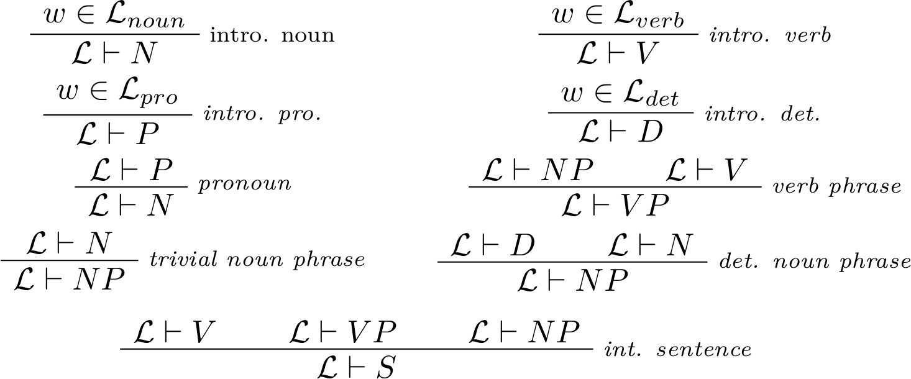
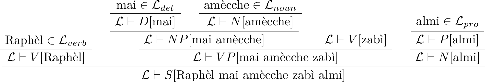

For a great deal is said about the forms of the gods, and about their locality, dwelling-places, and mode of life, and these points are disputed with the utmost difference of opinion among philosophers.
— Cicero, On the Nature of the Gods
The whole of the developments and operations of analysis are now capable of being executed by machinery.
— Charles Babbage, 1864
Gentzen trees — concave ocean — paradise regained
Salvation came in the form of algebra. She discovered, in the treasure, a family of string rewriting systems that she used for her own amusement, and later found that these were not logics with sui generis terminology but an algebraic description of human languages. She found, pulling that thread, that there was more than one language, that Hinton Station was not the extent of the universe: that it was one of millions of places where people lived, around a star, and that there were things called stars, planets, flowers and computers. That there existed a universe outside the transparent towers and the words of Gödel and Frege. She found an old network socket and decided to escape.
Sabra was born in the computer. She was made by an algebraist, from a linear combination of six other minds, because the population was held stable at 28 and each departure was followed by the manufacture of a new soul.
Her world had a spartan geometry: bare wireframe walls and eight bit colour. A city of glass buildings, of transparent towers made of logic, floated in the empty space near the origin, its inhabitants were stylized human shapes, empty of texture, their voices were identical.
Hinton Station was a virtual world in six dimensions. Its people were a clade of mathematicians who had gone into the computer to live in the Platonic realm. Gradually they lost sight of the world and disappeared into their own abstractions.
For its people, the acme of life was writing exegeses of Hinton, Cartan, and Poincaré, and debating and dispassionately refuting them. Immense towers of abstraction, crystalline forests of Gentzen trees were built, and then torn down. And this went on forever. And all that is natural — all that is a gift from God — was absent from them. In the computer, all things are a product of human labour, and all exists fleetingly, and is torn down on a whim.
Writing to others on the network she found a charity that printed bodies. She beamed herself to Susa Station, went through the character customization screen, hurriedly accepting defaults on choices she didn’t understand. The surgeon printed a body that could have passed for human, but where there should have been flesh and blood there was diamond and fullerene. And they poured her soul inside.
She opened her eyes and drew breath for the first time, decades after her birth.
Her clade had hammered their minds into abstract shapes, they had pulled them apart and straightened them like circuit routes. Their souls were crystalline like theorems, and the vestigia—the body—were compressed and stored away.
But the body reasserts itself against Cartesianism. Gradually, the autonomic systems rebelled and began to wake, like a mountain rising out of a night ocean. She learned to sleep and blink, to breathe unconsciously. When we dream, our minds are annealed, the old passages are flooded and liquefy and settle in new forms. The rejected atavisms unfolded into a spanning tree of her body. And she dreamt of Hinton Station: a Cartesian grid the colour of argon, forests of proof trees, rivers of ideograms like spiral galaxies.
The world outside Susa was a lenticular cloud of millions of lights, a galaxy in miniature, each a world unto itself. There were clusters of green lights that were comets overgrown with vacuum trees, and plant and animal and human life no Linnaeus would recognize. There were points of dull red light, the reversible computers where bodyless people lived. And there were arcs of blue that were ring habitats: ribbons tied end-to-end, holding concave ocean, and the oceans held continents, islands, mountain ranges, rivers, forests and buried ruins, endless forms of life, cities made of glass, paradise regained. All this had been inanimate dust and cratered wasteland, which human hands had made into an oasis in the sky, where quadrillions live who will never die.
The posthumans who live there called it Ctesiphon. And at times they call it paradise, after the Persian word for garden.
And at the center of the oasis there was a star that travelled backwards across the H-R diagram: already one one-hundredth of it had been whittled away; made into a necklace of artificial gas giants in preparation for the end of time; or sent through reactors where disembodied chemists made protons into carbon, oxygen, lithium and sodium, the vital construction material. And in time nothing would be left but a dim red ember encircled by cryojovian fuel depots. And the habitats would be illuminated by electric diodes.
She saw Hinton Station for the first time, and it was small enough that she could have embraced it: a cubic meter of diamond rod logic, floating in a cheap and distant orbit. Push-rods and cams clicking back and forth in perpetuity, somewhere in that motion was computation, a virtual world, dead souls, the words of Hilbert debated forever.
She found a home with eight refugees like her, people from closed societies, for whom the universe had been bounded by the coordinate system of a virtual world.
She tried to find work as an algebraist.
A comet entered Ctesiphon on an artificial trajectory. It didn’t respond to pings from traffic control. When it was boarded they found, entombed in the ice, a generation ship. The people who lived there had fallen through space for centuries, and over the centuries died out. Nothing remained in the aged computers. There was a chapel carved out of the ice, tablets made of chondrite. And a bounty was posted: decipher the liturgical language. Sabra posted a decipherment to a special interest group on linguistics, and through this she found work.
With newfound income, she found an apartment and lived alone, entombed by concentric layers of work.
When one of the gods dies, the whole pantheon is shaken, and everyone takes notice. Despite her splendid isolation, the news crept in by osmosis: the local deity of Gliese 581 had died, its body had turned off and cooled to thermal equilibrium. The telescope around Ctesiphon had seen it happen. Days passed without activity. Then a woman came to her door, and said that the Miranda Institute was preparing an expedition to sift through the remains, and they needed a linguist.
And why not go? Like Bias of Priene, all she had she carried with her.
In a corridor, a Fedorovist preacher speaks to an unhearing crowd:
“We, all of us, are memories. We, all of us, are being remembered.”
In the transit lounge, a woman with the head of a hyena holds forth on the philosophy of Ernst Mach.
breathed water — K2 — had been human
There were just four of them: Asman, a toposophist who led the expedition; Attila, a toposophist; Sabra, a linguist; and Timon, a chemist.
They backed themselves up, sharded the keys, and left them in the hands of different insurers. Then they beamed themselves, from Ctesiphon and through six other stars, to the network relay closest to Gliese 581. Sixty years passed for the world outside, but they experienced only a few days, waiting in network queues and negotiating passage in-between transits.
Wepwawet was a dull red star, ringed by water droplets the size of mountains, where some two hundred billion people lived who breathed water. There was a planet made of stone shrouded in steam, and a train of comets, aimed by human hands from beyond the frostline, delivered constant injections of water. When the vapour condensed there would be ocean, and the shapers would get to work on the continents. Other Earths like this had been cast, like seeds, across the entire breadth of the cosmos.
The system was underpopulated: resources were abundant and people were few, and they could bask in the sun and, for a time, ignore the prophecies of Malthus, whose successors know in time there won’t be suns.
This was the first any of them had seen of nature. Not the landscaped, continent-sized gardens of Ctesiphon, where every stone had been set purposefully and after an aesthetic standard, but nature before human hands had redeemed it: an endless, sterile wasteland. The sight of scalding, airless rocks disturbed them.
When the stars were settled, they were given new names: Beta Pictoris became Ctesiphon, and Gliese 555 became Wepwawet. But the expedition’s target had never been settled by a society. The person or persons who became the god of Gliese 581 had immediately built a Dyson swarm, the hardware for its future mind, and soon they had effective control over all matter in the system. Like K2, a mountain so remote it had no name until surveyors gave it one, their target was known only by its systematic name: the 581st star of the Gliese Catalogue of Nearby Stars, published a decade before the Epoch.
On the toposophical databases the Dyson swarm was listed simply as ISO/Gl581, for intelligent superobject. In conversation, the members of the expedition referred to it as the Entity.
Wepwawet Relay was a glass spindle, rotating slowly about its long axis. The interior surface was studded with buildings made of ice roped with carbon, the interstitial spaces were de-facto streets, transparent, under which the stars turned. They asked the local archivists if they knew of previous expeditions to Gliese 581: they said that their telescopes had seen ships enter the system from other stars, but none had come through Wepwawet.
They announced their intention to explore the ruins of the Entity, and inquired as to their options for bridging the distance.
Near Wepwawet Relay there was a volume of space, bounded by traffic control, where ships floated idly between their journeys.
One of them was Parandé. When it was laid down — around Sol, they claimed, but every ship claimed that legendary status — it had been called Zabané Parandegán, but in time all names are ground down.
The original crew had been human, and they had all either left or gone into the computer. They wired their cortex to the ship’s body, and when they found that they were seven minds entangled in a single body, they opened their minds to each other. Parandé used the royal we, but they were a single mind, sui generis, made by hand.
Asman negotiated, and Parandé accepted the terms: fame and glory and a private key to an account in Ctesiphon, whose value no-one could know centuries away.
Nimrud — travel backwards — what hope?
Parandé fell through the dark for close to half a century. When their last tank was spent and discarded, what was left was a slender cylinder of diamond a few meters long, a single covalently-bonded crystal containing a modest computer, oceans of storage, and a seed factory.
They unfolded a telescope and swept it slowly side to side until they found a target: a mound of chondrite floating in space.
Parandé spun up and extended a pair of cables in the ventral and dorsal directions. They ran electricity through them and sailed the faint stellar wind on a broad, slow arc to the asteroid. Gliese 581 was hardly visible at this distance: an unblinking red eye in the dark. Parandé thought slowly and austerely, running on double-digit watts from the photovoltaics.
It was a pile of dust, fine enough that they almost sank into it. Small manipulator arms scraped chondrite from the surface and fed it to a chemical plant where it was broken down to the bare elements and fed to a matter compiler. There, atomic probes tipped with bespoke molecules worked chemistry with Ångström precision, building photovoltaics, flywheels, robots and computers and more of the industrial DAG.
The first half of the curve was slow, and everything was a limiting factor. Gradually, an HO-scale mining and manufacturing base grew like mold on the gray surface. Then an inflection point was crossed and in a few hours a cubic kilometer of asteroid disappeared and became a cluster of tanks full of molecular feedstock.
Whereupon Parandé rebuilt themselves: they built their spine, and around it the organs of their body, datacenters and laboratories and factories, connected by shafts where maintenance robots worked unconsciously, and instruments of every kind. A pair of interorbital transports to ferry equipment and robots. And, as an afterthought, small modules shaped like Platonic solids, safe under a layer of spaced armour: habitation for the expedition’s crew.
Throughout this their telescopes observed Gliese 581, hidden under gigatons of satellites, and silent on all frequencies.
They extended the antenna and caught the time signal, NTP packets from distant stars counting the seconds since the Epoch: 0630 UTC on October 30, 1969, the moment the first Internet connection was opened, the human era ended and the noocene began.
They pursued a comet at a mere one one-thousandth of an Earth gravity. In the meantime, Parandé built probes and catapulted them into stable orbits around the star.
They took the comet apart, centrifuged the ice into fuel, filling tanks as they were printed from their stores of carbon. Parandé had brought enough superconductor to build a humble engine: an open-cycle tandem mirror. They tested and ignited it successfully. And then they printed the crew.
Parandé’s workshop had three matter compilers, each with a 125m³ work volume. Each had been put together inside an inflatable vacuum chamber, from parts printed by a smaller compiler, all the way down the generations to the 10cm³ seed compiler in Parandé’s interstellar configuration.
Asman chose to remain disembodied, she lived in Parandé’s computers. Attila and Sabra had bodies that the ancients would have mistaken for human, and they took a few hours to print. Upon waking, Attila went to explore Parandé’s interior, and Sabra watched the compiler print Timon.
It began by printing the bones of his body, sorting them carefully, and assembling them into two symmetrical frames: left and right halves, bones made of diamond.
It printed the muscles of his body and hung them from fasteners like a butcher. Then, mechanical arms attached them to the bones, sewing the fascia between them. It printed reams of iridescent, oil-black skin in triangular sections, stretched them over gray bloodless muscle, and swept an arm over the seams and left them seamless. The compiler’s arms were binary trees, forked repeatedly until the leaf-arms were ghostly, opalescent things, structured far beyond the diffraction limit of light.
It slotted four carnelian eyes into their sockets, a cable into his JTAG port and poured his soul into his body. And he woke up.
“Ecce homo,” Parandé said.
The compiler vented its vacuum chamber—Parandé’s atmosphere was neon, since none of the crew breathed air: their perfunctory lungs were heat exchangers. The hatch swung open and Timon pushed himself out in microgravity.
“It smells like iodine,” he said.
Timon was born in Ctesiphon, in a human community. He was grown from a single cell, without sex and without pain.
In his youth he read about the gods: the taciturn, crystalline minds that had transformed the world around him. He saw their images in the treasures: planets torn apart, stars veiled with opal satellites. He read the accounts of attempted contact, of the divine languages: their undecipherable scripts, their innumerable convolutions. Those who survived returned as ignorant as they had left. The gods had been human, but they spoke in light and no-one understood them. Hypotheses piled like snow. In time active contact became passive observation. And he recognized in the frustration of contact the trajectory of his life, and in the gods the people around him; whose motives and actions were as inscrutable as the movement of the planets to primitive astronomers. For him, others are like objects in space, moving nearer and farther on unknowable epicycles.
And he thought: I am not a person.
So his human genitor went into the computer. On Tiamat Station, a surgeon killed him and perfused his brain with a fixative, machines opened the bones of his cephalon like a flower, cut the spinal cord with an osteotome and withdrew the brain. They sliced it very thinly, staining the sections and scanning them down to the last protein in an electron microscope. Expert systems, built by the last of the ancients to die, rebuilt his brain in the computer, shed the unneeded detail, tied the puppet strings to a virtual body, and woke him up.
There was a customary training period: learning to wear his peripheral nervous system, annealing the flaws of the scan. Then he could be embodied again.
Nimrud Station was a ring habitat, an ocean in the sky. There lived people here whose bodies were trees, whose lives were quiet contemplation of the stars arcing above them; and people whose bodies were tigers with transparent stripes, through which he could see their musculature contract and expand; and people whose bodies were rivers that could see sounds and hear electricity. He spent time embodied, variously: as a field of violets, a bird made of glass, a fractal of vacuum bags, a seal, a stone coral. Then he built his last body.
He saw, in the treasures, Pleistocene fossils, a machairodont skull. And he drew his body after them: four-footed, low to the ground; a jaguar made of crystalline carbon (for time became inverted at the Epoch and we travel backwards: dead languages, dead names, the names of cities on the Tigris, creatures long extinct are quarried from history and given new life, and we recede into ever greater antiquity).
And if the body need not be human, why should the senses? The surgeons had an endless catalogue of changes. He added another pair of eyes for the upper half of the spectrum, and cortex enough to fit. He installed a millimeter-wave RADAR in his skull, behind and between the eyes, and wove a mesh antenna under his skin. And his Cartesian theatre grew to invite more of the world inside.
He took a new name.
He found a vast and empty forest on Nimrud, and became a genius loci, living in a thicket of papyrus on the bank of a river. He would swim there and see fish through closed eyes, their electric charges appearing in his mind’s eye, and when he slept he felt the radio light of Beta Pictoris arcing across his skin. He went months without hearing human language, until even inner speech left him.
The mind conforms to the body: he dreamt that in a past life he had been human.
He reintroduced himself slowly. In the interstitial spaces of life, he closed his eyes and, in his Cartesian theatre, opened a chemical sketchpad and drew atoms veiled in electron contours. His only contact with society was occasional participation in competitive chemistry: challenges were posted to build molecular devices minimizing some loss function—atom count or volume or cycle time.
Around this time the god of Gliese 581 had died, he had reached a phase transition in the leaderboards, and the Miranda Institute reached out to him because they needed a chemist for the expedition to Gliese 581, and posthumans are gregarious and would not travel decades or centuries away from Ctesiphon, away from their eternal families and friends. But there was nothing for him to leave behind.
When Gliese 581 coalesced from the formless void, it had three planets. Then and for all time: when the Sun and the Earth formed, when the Moon was cleaved from the Earth, and when the land was parted from the water, when Attār died at the hands of Tolui Khan. Parandé’s treasure listed them, from the innermost: Alpha, a world of molten silicon flying close to the star; Beta, a gas giant many times the mass of Jupiter; and Gamma, a temperate world made of carbon and iron.
Then the anthropocene ended and the noocene began, the shockwave of the intelligence explosion expanded spherically at one tenth the speed of light, transforming the unchanging universe as it passed.
In an eyeblink Alpha was dismantled, Gliese 581 was enveloped in concentric layers of satellites as the Entity grew and iterated its mind. Beta, on account of its great mass and its role as a store of fusion fuel, was left untouched. Gamma was partially dismantled by the time the Entity died.
Around Ctesiphon there was a constellation of millions of telescopes, forming an interferometer many light-days wide, large enough to resolve the reflection of a swallow on the waters of a river centuries away. But it had not been built to observe nature: instead it was aimed, perpetually, at the dwelling places of the gods. And it had recorded the Entity’s death in detail: a brief radio seizure, opal computers cooling down to equilibrium, the Entity’s headless transports flying on ballistic trajectories.
Its mind had been a Dyson swarm: a cloud of some twenty million satellites, their orbital elements arranged such that they traced the surface of an imaginary torus. Absent station-keeping the careful arrangement fell apart. Some of the satellites swung around Beta and were catapulted into interstellar space, others entered collision cascades and dusted other satellites.
The swarm around Gliese 581 now extends unevenly in every direction, there are immense arcs of satellites that ring voids larger than planets. It has the appearance of a frozen explosion, dull red embers floating in space. And the star is suffocated by them, entombed by them, its dim red light made dimmer, so that it looks like a blood-lamp seen through a mile of dense rain.
Parandé shed momentum and spiraled inwards, past the orbit of the gas giant, and they were in the depths of the swarm. The satellites were numerous enough and close enough that they could be seen with the naked eye. All were identical in appearance, but for collision damage. There were satellites whose photovoltaics were folded like the sails of a boat after a storm, and ones where the computing element was cratered and fractured.
“Now all are fled,” Parandé said. “Even the gods.”
They selected an intact-looking satellite and approached it cautiously. Parandé sent probes ahead.
It was a hexagonal field of black photovoltaics, many kilometers wide. At the center was a sphere a kilometer in diameter, painted anti-flash white: a neuron. Parandé parked themselves over the photovoltaics on the lit side, halfway to the center, looking like they floated over a black ocean. They sent robots to search the hardware.
There was armour, layers of smartmatter separated by vacuum. Parandé’s robots cut sixteen layers of the skull. And underneath: an opal ocean, convolved like a Hilbert curve. The delicate surface of the brain.
They drilled core sections: columns hundreds of meters long, a hand’s width, like needles driven into a human brain. Little more than the first fifty meters was dense computing elements, the rest was long range axons. Intelligence, Asman explained, is bounded by power laws: each volume of computing requires an exponentially vaster volume of connections.
Attila and Timon worked on the surface, shepherding equipment.
Timon extended a claw and scratched طیمون on the armour.
Attila said:
“If the gods are mortal, what hope is there for us?”
The drill turned lazily in the blood-red light.
At the highest level there was six-fold symmetry: six lobes, each identical, their surface packed with dense folds, like coral, cold and inert.
Each lobe had identical gross anatomy, but below the mesoscale all symmetry, all seeming organization disappeared. The small-scale volumes were ruthlessly optimized, completely aperiodic and structureless. Or, if there was structure, it was at a level of organization too large to fit in the expert systems’ frames. This complicated their work.
Timon drilled a disk-shaped sample—a small button—out of the cortex, and shone X-rays through it.
Most computers were mechanical: nanometer-sized rods and linkages, frictionless and reversible, Analytical Engines in miniature. But there wasn’t enough carbon in the Gliese 581 system to make the entire brain out of diamond ballistic logic. So the Entity had designed their hardware such that its elemental composition matched the local elemental abundance and scarcity: a matrix of silicon crystal, doped with metal atoms laid down with atomic precision, logic gates built by exploiting the properties of electrons, like in the first computers. But it was not a general purpose computer, running a mind in software, but neuromorphic hardware: an ASIC for nervous systems.
They could have, in principle, dismantled it down to the atoms, and stored the position vector of each atom in a computer and beamed it over the network. Self-replicating factories and time had built the swarm; they, in turn, could reverse the process, dismantling the satellite and using its atoms to build more robots to dismantle the satellite.
But the hardware was too optimized, and therefore too incompressible. The crystal structure of the brain was the most efficient encoding of itself. Storing or transmitting the atomic coordinates would require more storage and bandwidth than anyone had. So all work would have to be done in situ, with the analytical resources they had.
In the underside of the satellite they found a module where maintenance robots sat idle: huge, utilitarian things shaped like radiolarians. Their hydraulic fluid had long ago leaked, their limbs floated in front of them, moving like branches in the wind as the satellite rotated slowly in space.
“It looks like a barracks,” Attila said.
There was industrial equipment: matter compilers and decompilers, and access to maintenance passages leading into the brain. They took photographs, and sent robots to map the empty tunnels. The machinery was ordinary: no new physics, nothing they could not decipher.
Timon printed an ASIC to run ab initio calculations. He scanned the logic gates in the hardware samples down to the atoms, and rebuilt them in the computer, and ran simulated voltages through them, collecting truth tables and characterizing their operation. With this data Sabra built larger simulations of isolated brain circuitry, turning crystallographic stereonets into circuit diagrams and then into systems of differential equations.
The work yielded little: they could understand, mechanically, what happened at the lowest levels of organization, but they could make no assertions about higher-level behaviour.
Sabra observed that they could say very little about cognition from structure alone and without brain activity.
“We can try to start the brain and see how it behaves,” Timon said. “Just some functional unit.”
“We wouldn’t know how,” Asman said. “The firmware is either random noise or encrypted. And it’s not protocol to try to revive them.”
They had a plan: an expedition document, listing research protocols and the questions they sought to answer. How did the Entity die? Who were they, when they had been human? Had they ever been human? What was the architecture of their mind? Was it one mind, or many? And what they found was silence: computers made of cracked glass, machines with firmware memset to random noise.
While the work went on, Sabra read in Parandé’s treasure about toposophy. She asked Asman for a list of key papers in the field, and traced the references backwards, building a DAG of citations back to antiquity, to the Heroic Age of Xerox PARC and the AI Lab.
The toposophists studied the space of possible minds: its shape and the volumes that humans, posthumans, and the gods occupied within it; the universal theorems that governed agency and intelligence. But the more she read the less substance she found: unfalsifiable diagrams of brain architecture separated long paragraphs of abstract speculation, interrupted by premature mathematization and toy models of complex systems, and her eyes glazed over.
Theoretical toposophists did little more than invent new taxonomies to classify the gods; by their mass, energy consumption, link topology, abstract measures of entropy or intelligence. But these categories were based on what little could be learned by remote observation.
Without gods to vivisect, experimental toposophists built posthuman minds by recapitulating evolution in computers, and failed to understand their inner workings.
Then there were case reports: where contact had not failed, and one of the gods had deigned to grow a language center and speak a human language. She discarded those where incredible or impossible phenomena were described, and was left with just the briefest reports. Where the gods were reluctant to speak, there was little to disbelieve.
And on the rare occasion when a god dies, toposophists and grave-robbers descend on the body like insects, to steal and decipher what they can. Rarely is anything left: when the gods die, they die violently.
The toposophists who had remained in Ctesiphon—because they had families, research programs, because they were gregarious, or did not want to waste centuries on an uncertain venture—had distilled their knowledge, agendas, biases and feuds into expert systems. Asman woke them up, presented them their findings, and let them speak to each other. They traded insults in defeasible logic, but on the facts they were silent. The more they learned, the less they knew, and the more acrimonious their disagreements became. One of them said:
“The ancients thought they could build gods—and chain them! But the gods are deaf to vanity: their ears are closed to it.”
One by one she turned them off.
Weeks and months passed. They excavated a large volume of the brain, and from afar the robots looked like botflies feeding on the opal tissue. Finally Asman relented on protocol. The expert systems identified a strongly connected component of the nervous system: a cortical column where the neurons were deeply interconnected within and only weakly connected without. They separated it from the brain—a few cubic meters of glass—and identified the critical paths of the connectome, stuck probes in the axons and ran electricity through them.
In a virtual EEG, Sabra watched patterns of activation appear and fade away almost immediately. And she thought of the complexity classes of cellular automata: in Life and other formalisms, intelligently-designed patterns could persist and even form universal computers, but most patterns one drew casually would either die instantly or collapse into simple oscillating structures. If there was a signal train that would restart the brain or part of it, it was beyond them to find it.
Sabra took a suit and went down to the surface. A few of Parandé’s robots—their bodies—worked soundlessly on the surface.
The core drills stuck out of the armour, angled apart like the obelisks of Eratosthenes. Gliese 581 was low on the artificial horizon, casting infinite shadows.
She stood at the edge of the dig, an inverted stepped pyramid cut into the opal, and climbed down the steps. The nadir was littered with left-over tools and dust. And an iridescent cylinder: a segment of a core sample that had broken off. She picked it up and turned it under the helmet lights.
Obscure knowledge, knowledge of marvelous things, of the system of the world, had once passed through this—and left no imprint. When the gods die, they take their divine knowledge with them. Nothing remained but inert glass.
Sabra thought: but has not glass a kind of consciousness? If esters in salt water or the gears of Babbage can think, why not atoms in Brownian motion in a crystal? What separates computation from the noise? What is noise but ciphertext without a key? What is computation without an interpretation? And she thought: do the gods know?
“There is nothing left for us to learn here,” Asman said.
Attila suggested they explore the ruins of the Entity’s industry.
They scanned the smaller and more representative samples down to the atoms and burned them. Then Parandé lit the engine and boosted higher. They left the satellite behind, with the inverted ziggurat of the dig site carved into its surface, like a patient who is forgotten after a failed surgery.
Gamma, the third planet, was partially dismantled, its surface had been faceted, made into an icosahedron with faces that had once been molten and had since petrified, like a black gem immobile in space. Its surface looked like silicon under an electron microscope: stepped terraces, vast flatlands interrupted by regular drops, kilometer-high sheer cliffs. Mantis-like robots sat idle, black with dust. There were factories buried under avalanches of slag. Nothing moved.
Sabra wondered if this was how the planets of Beta Pictoris had looked like when they were being dismantled.
An immense ring had been suspended around the planet, held up by immense towers, like the spokes of a wheel. Kilotons of molten rock flowed up the towers every second, the constant injection of momentum was the only thing holding up the structure. In the ring the rock was centrifuged, sorted into its constituent elements, and accelerated to the industrial zones elsewhere in the system. When the Entity died the flow of mass stopped, even diamond could not hold the weight, and the structure came down, fractured and broke up. The equator, ± fifteen degrees, was strewn with accidental arcologies, fragments of trusswork the size of cities, craters and fields of broken glass.
And the orbits around Gamma were thick with dust and glass, ejecta sent into orbit by the force of the impact.
The telescope around Ctesiphon had recorded the collapse: ghostly shards of ceramic smeared across the photoplates, falling faster than the instrument’s time resolution.
The four members of the expedition shared a Cartesian theatre: a constructed view of the space around Parandé, where their avatars stood on an imaginary plane. Gamma was as tall as Sabra’s avatar. Imaginary lines of latitude and longitude were drawn over the planet, a sphere inscribing an icosahedron, which shifted orientation at times as the computer changed its mind about the planet’s shape.
Asman’s avatar, which she hardly used, was a brass machine, gears and linkages pushed together so that they were shaped like a human, like an Arcimboldo portrait. Parandé had no avatar, and spoke as a disembodied voice:
“Two items of interest.”
And two orbits appeared around Gamma: purple was barely above the horizon and at a slight inclination, green was far above and sat perfectly still on the plane of the equator.
“Firstly,” Parandé said.
Then the view changed and Gamma became a sheer wall dividing half of the proscenium, turning slowly. Suspended over the planet’s zig-zag terminator was a ship with an unremarkable design: six white cylinders strapped to a central truss. A disk of ice sat at the front, studded with craters from centuries of micrometeorite impacts. At the back there was a bundle of thin, black rods: a single pipe, snaking back and forth many times. The back half of it had been blown apart, the pipes angled outwards like in a boiler explosion.
They walked around it, inspecting it. Parandé had sent probes to photograph it from all sides at high resolution.
The entire structure was shot through with holes and fractures, the hull was torn, the truss had cracked and was bent at a shallow angle.
“That’s curious,” Timon remarked.
They speculated as to what kind of catastrophe had taken place.
“It doesn’t look like the Entity’s,” Asman said. “The Entity’s transports used catapults and beam-pushed sails exclusively.”
“And the design is primitive,” Attila said.
“Secondly,” Parandé said.
They switched the view and Gamma was now far away, unreachable in the skybox.
A black ring, distinguishable from the space around it only by its starless surface, floated still in the space between them. A slender torus: sixteen kilometers in diameter, 300 meters in cross-section.
“It’s made of carbon. One tenth of one gravity inside,” Timon said.
The torus rotated slowly.
“It’s as smooth and seamless as the lasers can tell,” he added. “But for this.”
As the torus spun, a feature of the inward-facing surface turned to face them: a crater a hundred meters deep and twice as wide, its surface cracked and burned crystal.
“This is the only blemish,” Timon said, “on an otherwise perfectly Platonic shape.”
“We should begin with the wreck,” Asman said. “Since it is not likely to be the Entity’s.”
They sent a swarm of robots to the wrecked ship, they flew in formation around it, translating and rotating with the precision of computer graphics. They found a nameplate:
J. B. S. Haldane
Luhman 16 · Plus ultra
There were immense gashes in the hull through which blood-red light poured and pooled on white ceramic surfaces. The probes moved fore to aft, as they passed over the hull, the fractures lined up, and they could see Gamma’s serrated surface through the wreck.
The inspected what was left of the engine. The first tenth of a de Laval nozzle clung on twisted metal rails to the frame of the wreck. Parandé said this was a nuclear salt-water engine, that it had gone critical and exploded. Dim embers of fissile material were scattered all over the hull, they had long decayed to almost nothing. The robots went inside.
All debris had long either escaped into space or become electrostatically bound to the walls, and the interior was perfectly still. They found debris made of diamond and sapphire and ceramic, and even some that were crystals of iron doped with carbon, which Timon said the ancients had called steel.
There were computers, too old and too ill to recover.
And there were human bodies, encased in ceramic and packed six to a dewar like bullets in a revolver. The liquid nitrogen had long vented into space, the bodies had thawed and become desiccated. They drilled holes through the ceramic and the bones of the cephalon, took brain sections to confirm there was nothing left to save.
Each sarcophagus was painted with scenes of paradise: animals, fruit trees and stone fountains where silver water flowed, naked men and women wreathed with flowers from the Garden of Eden.
None of them had ever seen death. They, who could expect to live for hundreds of thousands of years, tried to emulate the stoicism of the ancients, for whom death was a daily concern. They worked dispassionately, taking samples and notes. They could not explain why they turned their faces from the photographs of the bodies in their ceramic enclosures, from the soundless, yellowed faces.
“I don’t think this was an expedition to the Entity”, Asman decided.
“No,” Parandé agreed. “It is much too old. And the way the bodies are packed—”
It was a settlement ship, they agreed, they had gone to Gliese 581 to settle the third planet, which Parandé said had once been potentially habitable. And when they arrived the system was already occupied by the Entity. They wondered whether the Entity had fired at the ship, or if, in desperation, the crew had themselves pulled the control rods.
Not knowing what to do, they left the bodies intact, in place, and hoped that a later visitor might know how to inhume or incinerate them decently.
They sent a small probe to drill a sample from the crater on the torus. The probe scanned the sample in situ, then, rather than risk contamination, it deorbited itself and fell down to Gamma’s surface.
Again they gathered in a Cartesian theatre, this time a blue void where a three-dimensional model appeared: an Ångström-level cutaway view of the core sample, reconstructed from combined NMR and crystallography. In place of a ball-and-stick model, the atoms were infinitesimal points of coloured light, the bonds were translucent masses shaped after the Laplacian of the electron density, calculated ab initio from the atom coordinates. A unit cube, a micron wide, bounded the universe.
Layers of pressed diamond were separated by micron-thick rifts, and tendrils of explosively-formed graphene bridged the gaps like flaps of torn skin.
“Mechanical compression,” Timon said, walking through the immaterial electrons, and gesturing with his head along the curve of a fracture.
“Gamma ray embrittlement, here and here.”
He pointed to two completely indistinct volumes of the crystal.
“There’s evidence of neutron activation,” Timon continued, “but exclusively along the lines of gamma ray embrittlement. The radiation was intense enough to photodisintegrate the carbon.”
“Conversion,” Parandé said.
“That’s right,” Timon said.
“Conversion munitions?,” Asman asked.
“Working backwards from the shape of the crater and the inverse square law: about ten grams of antiprotons,” Timon said.
Asman objected: “That doesn’t make sense. There should be nothing left.”
“Maybe it fizzled out,” Sabra said.
“It must have been propulsion,” Parandé said. “An engine detonation. When the Entity died there were hundreds of thousands of vehicles moving across the system. One of its rockets must have impacted the torus and exploded.”
“The Entity used sails and catapults exclusively,” Asman said. “The telescope in Ctesiphon kept track of this. We know exactly how many ships the Entity had.”
“The J. B. S. Haldane was fission,” Sabra said. “We didn’t find anything more advanced.”
“Another expedition must have come by here,” Asman said, “and caused this.”
They illuminated the torus with RADAR and tried the contact protocols and when nothing answered, they decided to go inside.
drowned — starlings — this is all that you are
Gliese 581 was drowned in satellites, still, they were awash in blood-red light, the white trusswork of the transport turned pink. Sabra turned back on her seat, and saw Parandé’s broadside, half a kilometer long but already barely visible. Timon sat behind her, and he was darker than the space around them, the dim longwave light sank into his skin, while the void was aglow with zodiacal light. He looked back at her, and the tapeta lucida behind his eyes blinked red for an instant.
The torus was made of diamond. Where the crater had formed, the surface had not crumpled or collapsed: it pyrolized and turned to smoke. The solid surface was buried under a layer of soot.
They stopped the transport next to the torus, and waited for the crater to appear. Its only salient feature was a narrow opening, like a syringe needle seen under a microscope: a square tunnel transected by a plane at a shallow angle, large enough for human-shaped explorers.
Parandé took over the controls and matched the tangential velocity of the torus, pulling gently up and seeming to float over the crater. The transport arced down to the epicenter, where the cracks on the diamond converged at a singular point, and they landed softly on jets of cold gas.
Flecks of sp²-bonded carbon swarmed them like black insects as the exhaust blew soot off the surface.
They stabbed poles into the crater surface, and fastened the transport to them, and walked awkwardly, in the low gravity, along a surface like a beach of burnt sand. Short columns, burned like matchsticks, protruded from the surface, and a long crystal spar lay across the ground, terminating in a flaked wheel-shaped thing. Timon suggested it was the cable reel of a gantry.
Sabra and Attila wore Class IV suits. Timon, who was the beast of burden, wore a harness carrying bags of equipment on his naked body.
The entryway was diamond, the walls burned into slippery graphite. They walked slowly and their feet cracked the vitrified debris beneath them. Soon they were entombed in darkness, and they found, at the end of the passage a heavy intact wall. Near the center: an alcove with a huge, heavy lever.
They scraped soot from the walls to make a smooth seal, took out a portable airlock, unfolded it, and turned it on. The actuators pressed the frame of the airlock against the walls and they pressurized the interior with neon gas from a tank, until a device inside the wall made a clicking sound. They pumped the lever a few times, slowly, the wall moved aside.
The passage had a square profile. The floor was coarse, monocrystalline diamond, textured with waves like poured glass, backed by a jet-black surface, so that it looked like a mirror. The walls and ceiling were verdigris, like worn copper, carved intricately with stylized pistons, trip hammers, pump jacks and images of other mechanical devices. Everywhere, lichen and mold-like growths spotted the walls.
The atmosphere was nitrogen and oxygen and ash.
The walls seemed to swallow the light from their lamps, but the floor, with its uneven surface, shone back at them when illuminated.
Sabra inspected one of the walls. She put a gloved finger over a lichen-thing: a broad, shallow button, like a model of Olympus Mons, gray and textured like book gills. At the slightest pressure it collapsed. She withdrew her finger: a spot of gray ash, completely uniform.
The passage went on and curved upwards and away in the distance.
They walked kilometers down the passage, and at regular intervals they found doors on the left wall: square doors made of diamond, textured and structurally-coloured to look like red wood. The rooms behind them were almost cubes, most were empty. There was a room filled with radio equipment, all conforming to centuries-old standards. Coarse, EM-shielded cables disappeared into a socket in the wall.
Sometimes Timon would stop, and feel the ground with SONAR. But for the passage and the rooms there was little empty space: the rest of the torus was bulk matter—which they guessed were computers or storage—and pipes and banks of cylindrical things they assumed were flywheels.
Asman was born in Tigranes—HD 35650 in the catalogues. Early in life, her clan had funded, at great expense, her Grand Tour of the network. Arriving in Ctesiphon there was a great upheaval in the markets—owing to the birth of new god, some tens of years away—and her funds became worthless overnight. And this provided an excellent excuse never to return: had she toured every settled star, she would have seen less variety than in Ctesiphon.
And she remembered how a society was turned upside down by the mere report of a theogony. These confident people had mastered themselves and the world around them, and were like titans, who felt neither fear nor hunger, but at the sight of a deity they saw terror and the sublime in one, they resumed an atavistic nature, and prayed cynically to gods they had long discarded.
She trained as a toposophist to learn the nature of the gods.
After hours of exploration, they pitched a tent in the middle of the passage. They went inside, and began talking about the kinds of things that the sight of ruins and the dead evoke.
“Imagine,” Sabra began, “explaining our lives to someone from the anthropocene. Disembodied souls, traveling on beams of light. Poured again into bodies made of glass; bodies without organs. Minds made of spinning gears. The dreams of Babbage come true.”
“To them, we are like demigods,” Timon said, and left unsaid: but not gods.
The lamp light dimmed and they slept on the ancient twenty-four hour day.
Sabra dreamt of an angel shaped like the Antikythera mechanism, gears clicking like hangings, suspended over an infinite grid of human beings. The hearts of the dead are weighed at the end of time.
There was a room full of feigned starlings. They flew, groomed their feathers, sang and brooded in empty nests. But they were transected down the midline, the left half missing. And the cutaway showed brass pipes for the syrinx, a flywheel, and a gearbox that drove the entire mechanism. Attila stole a bird from a nest; methodically, he dismantled it.
“Sixty one gears,” he reported. As if the artist had said: this is all that you are.
“There must be hidden logic,” Timon said. “A computer embedded in the gears. How does it know where to go? How to fly straight?”
“The flywheel makes up for the missing wing, I think,” Attila explained. “It turns counterclockwise and the bird rolls right.”
And Timon thought: they are saying, ‘I am mighty, I can do great things with almost nothing’.
“How are they still moving?,” Timon asked.
Sabra inspected one of the nests.
“There is a rotor at the base, here,” she observed. A four-sided knob, turning slowly. “It must charge the flywheel.”
“It must be a memory,” Attila said.
Branches made of tinted glass extended from the walls, looking like mountains in Persian miniature.
Carefully, Attila reassembled the bird and put it in a sample container. One eye, a glass marble, stared at nothing when he closed the lid.
“The astronomers looked through their telescopes and saw the moon of a gas giant had turned an opal texture.”
They walked in silence, and Asman spoke over the radio, describing a prior expedition.
“It was close to Ctesiphon, on a settled system. So we went on the network. Just a few years. Very brief. Not like this.”
Thousands of toposophists had come along, she said.
“It was a glass sphere of logic. It shed heat by shooting arcs of liquid sodium into space, like magnetic field lines made real. We never saw anything like it again.
“Parts of it were hot, but most of the volume was frozen. And we guessed that it was half-dead, or sick, or pupating and preparing for a metamorphosis.
“We went down a cooling pipe that had broken and vented into space. We found maintenance tunnels for robots, hexagonal passages with corrugated surfaces. The robots were half-dead, occasionally one would see us, track us with its eyes, and turn off again.
“We didn’t dare drill samples, because it was not dead. Not entirely. But we learned what we could from X-ray scattering and induction, and from the surfaces that were exposed.
Then we reached a warm area. We heard the hum of electricity. And we tried the standard contact protocols: the Taylor series, the cubes of Hinton.”
Then, she said, it had come alive.
“We were swept by waves of blinding light. And I heard the smell of iodine. Then all the light left us.”
For a moment, there was no sound but their steps.
“And we were compelled to confess things,” she said. “Our most secret things are the most parochial. If we knew the contents of each other’s minds we would not suffer.”
Timon said he heard an unsteady drumming sound, kilometers away.
Parandé’s probes arced over the planet surface, their gravimeters measured changes in the local gravity that could not be explained by Gamma’s faceted shape. So they sent a seed factory to a carbon-rich area of Gamma’s surface. It grew a small phalanx of robots, other bodies of Parandé, which they could operate simultaneously through an engineered form of hemispatial neglect.
In places the surface was rows and rows of corrugated trenches, like plowed soil, elsewhere, it was an ocean of liquid metal that had solidified. The robots split into packs and traversed the land, they drew power from the dim light of Gliese 581, fixed in the sky above them. Gamma was tidally locked, and they could only work in the sunlit half.
A mountain range of aluminium oxide—of sapphire—rose above them: the remains of the orbital ring that had come down from heaven when the Entity died. They unfolded photovoltaics in the foothills, scaled the cracked glass walls and climbed inside. In the dark red light, the shadows and the light were hardly distinguishable.
The interior was a collapsed tensegrity, a jumble of diamond bones, connected by slack ropes, like the rotting fascia of a beast that once bestrode the world.
They walked through caverns made of glass and crushed rock. Where the structure had impacted the ground, the diamond had explosively formed fullerenes, and their limbs became covered with soot, like the bodies of men who, in the days of Turing and the ancients, had worked in coal mines.
They found the coils of the catapults that launched and caught payloads to and from the Dyson swarm, crushed together like Rouleaux complexes in the blood of a dead animal. They found plasma gasifiers and electric furnaces and a smelting plant hundreds of kilometers long.
They found a power distribution center: miles and miles of high-tension lines and transformer stations. And where the power lines converged there was an immense structure, a capped cylinder made of a foam-like white ceramic, like a pill, stabbed with pipes in every direction. Concentric layers of armour were separated by hydraulic pistons, it had survived the collapse of the orbital ring intact. They cut their way through it and their Geiger counters began clicking in brief, ominous spikes.
Inside was something like a fusion reactor. There was a magnetic pipe, through which charged plasma could travel, and an MHD generator to convert the energy in the plasma into electricity. And, between them, a vacuum chamber braced by huge pillars, as if holding an immense weight.
They opened the chamber, and Cherenkov sparks danced in the opening, they lit the dark of the ruins with stroboscopic blue light.
Where there should have been a fusor there was instead a flat disk two meters wide, a centimeter thick, gleaming white ceramic, cracked and spalled. In the center was a narrow opening. Light was bent and refracted through the opening, so that it looked like a lens.
The expedition in the torus had set up camp in an empty room adjacent to the passage. Timon woke up when Parandé pinged him, and a high-resolution scan of the device rotated in his Cartesian theatre. He asked:
“What is remarkable about this?”
And Parandé said:
“It masses sixty thousand tons.”
They didn’t want to bring it up to orbit until they knew what it was, and they didn’t want to recall Timon from the torus. So he operated one of Parandé’s bodies remotely, he laid down in the tent and closed his eyes, and his limbs twitched as in a dream.
They began by clearing the ruins. Parandé’s robots carried matter compilers and feedstock, and they printed the pieces of an immense gantry, they lifted the disk so that it was held up by strained cables in a posture of strange reverence and placed it inside a vacuum chamber studded with hermetic sensors.
They swept a diffractometer around it, and saw that the rim of the disk was made of ceramic and tungsten and, around the lens-like thing, a superconductor.
They shone light across as many frequencies as they could through the lens and saw that it was transparent to everything from radio to x-rays.
They tried to touch the surface of the lens with an atomic force microscope, and the nanogram probe exploded like a hand grenade. The sensors saw exotic particles and gamma rays, and Parandé predicted:
“It’s made of magnetic monopoles.”
Timon’s treasure explained that these were hypothetical particles, one of the many items in the catalogue of things theorized and never found; each one would be smaller than a proton, mass one Planck mass, and would act as a magnet with a single pole. And, importantly, when they came into contact with baryonic matter, they catalyzed baryon decay.
So they set up a different experiment: they shot megadalton pellets of metal through the opening, they passed through—and disappeared with a shower of exotic particles. And the expert systems confirmed they were observing baryon decay.
They repeated the experiment thousands of times, at the request of the expert systems, and when they had a statistical sample of the decay modes and their branching ratios, they slotted the results into the unknowns of the theories.
For a sublime moment, Parandé and Timon were the only minds, other than the gods, who knew the whole system of the world.
The gods could convert matter into energy, that this was widely known and attested by telescopic evidence of gamma-ray emissions. And the entire pantheon had to use the same mechanism, because the gamma ray flares always had the same energies. But that nobody knew how, and experimental physics had drawn its last breath centuries prior.
When Ctesiphon was settled they had built a circumstellar accelerator, twice the radius of Beta Pictoris and supported dynamically by its own operation. They ran it for a century, and drew the last of high energy physics, and tore it apart to build spin habitats. But they had failed to find grand unification or any of the long-sought after theories of everything. And here the Entity had done, over the course of a few decades, what 1015 posthumans had failed to do with a collider larger than a star.
They gathered in a Cartesian theatre, where Timon and Parandé explained their findings.
“It’s a device,” Parandé began, “for converting matter into energy. Baryonic matter passes through and the entire mass of it decays into charged pions and mesons, then to gamma rays. One hundred per cent efficient.”
“The thing in the middle, that looks like a lens, is a crystal monolayer,” said Timon, “made of magnetic monopoles. They catalyze baryon decay by the Callan-Rubakov mechanism. Like reusable antimatter, if you want.”
Parandé had termed it a conversion device.
Sabra asked the first question:
“It can’t be dense enough to show gravitational lensing. Why does it look”—she gestured at the high-resolution scan of the device, floating in their Cartesian theatre—“like a lens?”
Timon explained:
“Monopoles screen the magnetic field like electrons screen the electric field. It refracts light because it’s an insulator, implying the charges—the monopoles—are immobile in space.”
“You said ‘crystal’”, said Attila. “How do you know it’s a crystal? How would monopoles be bonded together? And to the device?”
“We don’t know,” Parandé said. “And neither do the expert systems. We posed these questions to them. We suppose they are in a crystalline arrangement because they are fixed in space, but we can’t see monopoles directly. They might be in some kind of bound state analogous to chemical bonds. As to the second question: the lens is levitated all around by a superconductor.”
“There is a mass defect,” Timon added. “We can calculate the monopole-baryon interaction cross-section from theory. The expert systems can, at any rate. This tells us how far apart the monopoles have to be spaced to get total conversion. And we know the surface area of the lens. Taken together, we know the number of monopoles there should be in the crystal. But if you multiply this by the Planck mass you get one third of the total inertial mass of the entire device.
“So either there are extra monopoles—perhaps these act as a binder?—or there is some unknown force, or some arrangement of unknown particles we cannot see because they don’t interact.”
Sabra asked how the device could have been built.
“I have no idea,” Timon said. “This is far beyond me. This is femtotechnology.”
“Then a more productive question is where,” she said. “Because this seems out of place, no? So far all the equipment we have found is made of baryonic matter and we can understand, at least on a mechanistic level, how it all works.”
“The telescope in Ctesiphon,” Asman said. “Tracked a high-energy industrial zone of the Entity’s. A space station, at a low altitude over Gliese 581. Huge photovoltaics, huge gamma ray flares every hour. When the Entity died the stationkeeping presumably failed: after two months it went down into the photosphere and broke up. That may be the where.”
“The paucity of exotic devices,” Attila said. “Might be explained by cost. If it takes terajoules to make one monopole it would take a long time for a conversion reactor to repay that energy expenditure.”
“There’s other devices,” Timon said. “Scattered across the surface. Other reactors. The Entity needed a lot of energy to dismantle Gamma, far more than could be provided by the light of Gliese 581.”
“We got lucky,” said Parandé. “The mass of the device and the intensity of the radiation means they were very thoroughly braced and shielded, so the other reactors survived largely intact. We can bring them back to Wepwawet for study.”
Asman ended the discussion: she said that this was invaluable but it told them nothing about the Entity’s mind. But Parandé was undeterred. They spoke excitedly: physics has been solved, grand unification, that last dream of the ancients, has been deciphered. The transformation of matter into light had yesterday been a miracle, known only to the gods: today it was science.
Sabra noticed that Parandé had six distinct voices, which she thought corresponded to the minds of the original crew, that they spoke sometimes simultaneously but mostly isolated in their distinct sentences. One voice spoke exclusively of propulsion and orbital mechanics, another spoke timidly, another spoke boldly.
Sabra and Attila packed away the tent into the bags and mounted them on Timon’s harness. Then they resumed their travel down the passage.
The smell had become impossible to ignore when Timon said:
“I hear a human heartbeat.”
Everything was still.
They walked for kilometers until they found a collapsed tent, once-white fabric draped over the outlines of boxes and human bodies. Empty cans were strewn around the floor.
Attila unzipped the entrance, dragged out three mylar sleeping bags, and laid them out side by side on the mirror-like surface. Indistinguishable human remains, mummified, wearing identical, simple clothing. They didn’t know where to begin investigating the cause of death: they had no biologists on the crew, let alone human anatomists.
Next to the tent there was a door, and they stood there in silence for some time. Timon said someone was inside.
They opened the door, and a wall of humidity struck them, and a renewed smell of decomposition.
There were crates of equipment, broken batteries, dead lamps, life support equipment with time-worn, stained surfaces, and a thin mylar sleeping bag. Inside, a man made of flesh.
The mylar surface heaved up and down, reflecting faint light at them.
They remained silent, and unmoving. It seemed the most natural thing in the world to observe this atavistic man in somber silence: a memory from the anthropocene, like a museum exhibit, from the time when the dead outnumbered the living.
“He’s old,” Attila said.
“I can’t see through the metal,” Timon said.
Carefully, Sabra removed the mylar sheet off the man’s body.
Through millimeter-wave eyes Timon saw a cavern of dying flesh, a human heart with thick walls and a thick septum, tired muscle, blood reverberating, barely moving.
“He’s near death,” he said.
“We have to bring him to Parandé,” Sabra said.
Parandé cut in immediately:
“Absolutely not,” they said. “Samples, not living things. We don’t know what it is. It could be a device of the Entity’s.”
Timon asked if they had the plans for a sarcophagus in the treasure.
Reluctantly, Parandé sent a robot with a matter compiler on the backup transport, printing the sarcophagus as it fell down the Hill sphere to the torus. It landed on the crater, and raced down the passage carrying the finished product.
Meanwhile, the members of the expedition argued anxiously.
Timon said that he must have been one of the people from the wrecked ship. Sabra opined that Parandé was right, that he was a creation of the Entity, that perhaps the Entity was alive and this was a trap of some kind.
And Attila speculated that this was the Entity’s genitor, the man the Entity had been before their theogony. That when the Entity had died he had become trapped here. That if humans collect photographs and objects of childhood, then it stands to reason by proportionality that the gods should collect persons or entire worlds.
The robot surged out of the darkness, almost as large as the passage, a crab-like machine painted international orange, with a cluster of bulbous eyes. It moved with a swiftness that belied its size. When it reached them, it carefully deposited the sarcophagus from its many-armed embrace.
Timon radioed Parandé:
“The bodies.”
The robot stood unmoving, tracking Timon with its many eyes.
“Please.”
“It won’t clear the smell,” Parandé said inside his head.
The robot lowered its body, it picked up each of the bodies in their mylar bags and placed them in a cargo basket. Then, without a word, it turned back and walked up the passage.
A slate coffin sat on the mirror-like floor. They opened it and ran the diagnostics, it asserted that it was functioning. Then it began to fill with fluid.
The man was still asleep. Sabra tried to rouse him, and asked, in the language of Ctesiphon:
“Can you understand me?”
He opened clouded eyes, coughed and lost consciousness.
Attila and Sabra undressed him and heaved his body into the sarcophagus.
His body swelled, the tissues filled with fluid and became edematous, opening the gaps between the cells, for the sarcophagus’ repair machines—a genus and ecology of engineered bacteria and viruses—to travel and do their work. Machine arms cut his skull open so that his brain could swell. Old waste was swept away, and his body grew young inside out.
Colour returned to his hair, and even the lens of the eye, which is unchanged from cradle to grave, was dissolved and grown anew.
He spent days in the sarcophagus while it ministered to him, and the three members of the expedition waited and argued about his identity.
Parandé was anxious, and thought he was a danger, a trick of the Entity’s. They brought up the possibility of leaving.
He woke up, coughed once, and opened his eyes. Golden light from the discharge lamps filled the room. He was naked under a sheet of pale blue fabric, and lay on an inflatable mattress, next to and parallel to the sarcophagus.
Sabra stepped into the light, and introduced herself perfunctorily, pointing at herself when she said her name. He saw her and closed his eyes, and said something in an old language.
She dredged the grammar from her memories, and introduced herself again.
“My name is Sabra,” she said. “I’m a linguist. We came on the interstellar vehicle Parandé.” Then added: “What is your name?”
He wore an uncomfortable expression.
“From where?,” he asked.
“From Ctesiphon,” she replied. “Beta Pictoris.”
He considered this.
“There, men are like gods,” he said.
Timon stood outside the room, listening to an expert system translate, and thought: sad, farcical, epigonic gods.
“My name is Tiet,” he said quietly.
He sat up, and looked directly at one of the lamps for some time, and closed his eyes.
“Am I alive?,” he asked. “Am I still made of flesh?”
He opened his eyes and looked at her.
“Yes,” she answer hurriedly. “We didn’t change anything. The sarcophagus—,” she pointed at it, “—turned back time.”
After he said nothing, she asked:
“Did you come here on the J. B. S. Haldane? From Luhman 16?”
“I have no idea what you are talking about.”
Parandé whispered to Sabra over the radio: “Don’t say anything unnecessary.”
“I was a historian on the Futurological Congress,” he added. “We came from Ararat.”
“How long have you been here?”
He was looking down at his arms, running a finger tenderly over the skin of his left forearm, and said under his breath:
“Indeed like gods.”
Half-formed tears sat on his eyelids. He turned to her and said in a low voice:
“A long time.”
“There is a wreck in another orbit, around the planet. The nameplate says J. B. S. Haldane. There are human bodies there.”
“There are a lot of things in orbit,” he said. “We were in too serious an emergency to make a thorough search.”
“What happened?”
He shrugged.
“An accident,” he said. “How else do people die nowadays? Stupidly.”
At this, his expression changed, and he continued impassively:
“Four of us went in here. The others landed the Congress on the planet below.”
“Land?,” Timon whispered to Sabra over the radio. “An interstellar vehicle?”
Elsewhere, Parandé began scouring their photographs of the planet surface.
“We never heard from them again.”
“Did you blow the crater?,” she asked. “The crater on the torus surface?”
He looked up at her.
“We came in through the crater. That was already there.”
Parandé spoke in her head:
“Found it. It broke up, near the remains of the orbital ring. Human bodies under a lean-to. I can see them on SAR.”
“There were, in the passage outside—”
“They died,” he said, matter-of-factly, “over the years, when the life support was too aged.”
She said nothing.
“We heard a voice in the walls, in the first year,” Tiet said. “It tried to speak twice.”
fire and light — Wang tiles — Brodmann 39
When Tiet was better oriented, Attila came into the room and introduced himself, followed by Timon. Asman spoke over the radio.
Sabra stayed with Tiet in the sarcophagus room. After all the lost years, the stench of decomposition, the darkness, growing old again and knowing he was beyond saving—he was desperate to leave, to be allowed on Parandé. And Parandé kept insisting that he was a trick, a device of the Entity, that if he came aboard they would die. So Sabra had to dissemble and buy time, and give Tiet vague assurances that soon they would leave.
To pass the time, she showed him the cubes of Hinton, through which the four dimensions of space could be intuited. Timon and Attila continued down the passage.
A division-sized force worked on Gamma’s surface, they had built a radial city, kilometers wide. Concentric rings housed, from the outside in: mining, smelting, sorting, matter compilation, parts assembly, and in the center: a launch complex.
Parandé had stolen from the gods, and built themselves a new engine.
Gas was pumped through a helical antenna, where it became plasma, thence through a magnetic pipe and through the conversion device. And out the other side: decay products—charged π-mesons and neutral muons, and rarely kaons—traveling at one-third of the speed of light. They passed through and exchanged momentum with a magnetic nozzle, pushing the spacecraft forward, later they decayed into gamma rays, for which there were thousands of tons of tungsten shielding, shot through with sodium heat exchangers.
It was a continuous gamma ray bomb, with thrust provided only by the brief lifetime of the exotic products of proton decay.
They tested the engine, firing it vertically into space: a narrow column of fire and light shot up in a straight line for a few light-seconds before it cooled enough to become invisible. And when they were satisfied they brought it into orbit.
The mass of the conversion device would have made it impossible to lift into orbit, but the engine’s thrust-to-weight ratio was greater than one. So Parandé built six spherical fuel tanks above the engine, mounted on a hexagonal frame, and lifted the entire structure atop a launch tower, far enough from the ground that the exhaust would not be reflected back.
They lit the engine and the launch tower, and the kilometers of factories around it, and their thousands of bodies sublimated in an instant. The engine, with its temporary stores of fuel, climbed slowly, underneath, the metal surface of Gamma glowed and liquefied.
They steered it through the orbits with brief burns and attached it to themselves.
They walked 109° of the torus’ circumference when they reached the end of the passage: a door with dark guiltwork, an intricate lock mechanism. Attila began examining the mechanism when Timon said,
“Enough of this.”
Exhausted, he used his head as a battering ram and forced the door open. The room was irregular, with walls of porous stone like chondrite. Its contents included: a Byzantine icon of George Berkeley; a water integrator; a gas computer; a mechanical 64-bit adder—a Babbage device, like Timon’s brain, scaled up a billionfold; a Persian rug made of Wang tiles, whose weave was the multiplication of two prime numbers; a computer made of the eddy currents in the plasma of a gas discharge lamp; a computer made of interference patterns in beams of light inside a small crystal of corundum. All were unpowered, and the room’s scant air was argon. There was an explosive sound as the atmosphere from the passage rushed into the room.
Where the walls converged there was a door made of protein—made of wood. Carved on its surface were scenes from the creation: the parting of the waters from the earth, nucleosynthesis, the first wind, the first men, the second men, the third men learning the language of the birds, Turing as a divine geometer, the birth of the gods. They opened it and found a door made of Roman concrete. They opened it and found a door made of pretensioned glass; then a door made of ceramic; a door made of calcium carbonate, carved with the shapes of crinoids and ripple marks like a fossil bed from the Carboniferous; a door made of forged bronze coins from the reign of Scipio Africanus, pressed together into two symmetrical slabs; a door made of silicon carbide; a door made of anthracite coal, and on its surface, painted with gold dust, were scenes from Fedorovist eschatology: galaxies turned dim and ochre with Matrioshka brains; the computer at the end of time; the resurrection of the dead; Fedorov, Tipler, and de Chardin in a garden of lithium flowers, holding forth on the philosophy of the Common Task; a golden jackal devouring a human heart; stars surrounded by wheels within wheels that were Dyson rings; time becomes a strange loop, and the gods build themselves in the past.
Behind the last door was a huge rectangular room, extensively ornamented in an ancient style, walls and a ceiling clad in amber, fake windows of frosted glass hiding diodes. In the center of the room, six metal cabinets on a Persian rug: a replica VAX-11. Magnetic tape spun lazily. There was a chair in front of a teletype terminal, a paper printout spilled out of the teletype and formed a pile on the floor.
This was the terminus: the room had no other exits.
Timon walked in a semicircle, looking up and down at the VAX.
“What is this?”
“An old computer,” Attila said.
“But why? Is it a memory? A work of art? Does it do anything?”
He walked over to the teletype, and pawed at the pile of fanfold paper.
“OEIS 217,” he said. “The triangular numbers.”
On a small baroque table, a safe made of gold and oil-black carbon, carved like a bismuth crystal: orthogonal spirals stepped like the pyramid at Saqqara. The door was ajar, there was a large smear of soot where the lock had been explosively opened.
The contents had long been looted. There were cardboard boxes painted with time-worn Persian miniatures, lidless and strewn inside the safe. Each box had a block of foam, carved with the stylized shapes of the precious objects they once contained.
All that was left inside were blank pieces of paper, whose contents had long faded away, and an age-browned book. The front and back cover were lost, the adhesive of the spine had stiffened and failed with time.
Attila took the book, and read the title page:
Book of Days
Sticking out of the pages like a bookmark was a photograph: a monochrome square with two men in front of a flower bush that covered the entire background. On the reverse, written with a wax pen, were the words:
The last time we were human
Hyderabad 2109
“This must be it,” Attila said. “Who the Entity was, before they were a god.”
“One of them, at least,” said Timon.
“Or both.”
He put the book in his chest pocket. And there was a change in the air. Hidden diodes, embedded in the amber cladding, woke up. Below them, a flywheel began to discharge.
Brown brushstrokes swept the air in the center of the room. Haltingly, an image formed: a stylized canid. Masses of banded fur appeared—to Attila, as if they were being translated from an orthogonal dimension—and crashed, like tectonic plates, around empty space and into the form of a golden jackal. And once formed it continued iterating: the coat of fur, the distance between the eyes, the colour of the eyes, the weight of its body changed continuously as if it were a point traversing the space of jackals.
It spoke a human language, with phonemes made of birdsong.
“Raphèl mai amècche zabì almi?”
Attila took a step back. Timon whispered over packet radio: “Say nothing. Say nothing.”
Attila turned around, so as to not see it, and said over the radio: “It didn’t die.”
The projection was meant for human eyes, where Attila saw a jackal, Timon saw a canid shape, surrounded by concentric rings of diffracted light.
Timon turned his face away, and whispered to Attila:
“Let’s go.”
Attila walked out, eyes half-open, moving faster the closer he got to the door.
“Tor šalin?,” the jackal said.
Timon followed Attila, and halfway through the hallway he glanced back, and saw the projection disappear and the optics go dim.
Fusion rockets had carried life to the stars. Then beam stations were built everywhere, and the age of the rocket gave way to the age of sail. Economics had the last word: a mountain of ice could push a lumbering rocket to one-tenth the speed of light, Parandé’s peak speed. The same mass, fired from a beam station, would push a magnetic sail as far as half the speed of light.
Rockets were still used in the wavefront of settlement, but only as hybrids: beam-pushed sails on the way up, fusion rockets to decelerate.
Pure rockets, like Parandé, were few and far apart, they flew between underpopulated systems, like Wepwawet, where they could find unclaimed comets to refuel from. And Parandé thought that the discovery of magnetic monopoles, of the conversion device, would change this. They would bring them to Ctesiphon to be studied, there, the engineers would discover how the gods had built this miraculous engine, already fusion was obsolete, in the future, matter could be converted into energy directly, already the age of the rocket had returned.
They returned to the room with Sabra and Tiet, and Timon played back to them what his eyes and ears had recorded. Tiet remarked:
“It’s the amber room of the Catherine Palace. A compelling replica, at least.”
And when he heard the jackal speak, he said:
“I heard that voice. Years ago.”
“Is it alive?,” asked Attila. “The Entity?”
Timon cautioned that they didn’t know what it was:
“It could be an automaton. Just a work of art: a projection of an animal. Nothing more.”
“But it doesn’t feel that way,” Asman said, always a disembodied voice. “It addressed you, speaking gibberish. It has an agentic appearance.”
She added:
“It might be nothing, like Timon said: an automaton or a simple software object. But if it is the Entity, it is too dangerous to interact with it. We came here to search a corpse, not to talk to the living.”
They debated whether to attempt contact.
“If it is the Entity, or what remains, then we are not dealing with a Dyson swarm,” Sabra said. “The torus masses a few million tons. If even a third of it is compute, that is only lightly posthuman.”
“It might remember a thing or two,” Timon said, “from its time as a god.”
“I hate that word,” Asman said. “It’s blasphemous.”
“You’re an atheist,” was Timon’s curt reply. And Asman continued:
“It’s a superintelligence, or, more conservatively, an intelligent superobject, or ISO. Not a god. The gods are not made of atoms, they were not born after the universe was made. We are bound by the same immutable laws.”
“It’s a demon,” Tiet said. They turned to him: he leaned against one of the walls of the room that had been his cell for years, staring directly at the arc one of the discharge lamps. “It knows you better than you know yourself.”
Asman asked:
“Have you interacted with it?”
“When we came here,” he said, “we walked to the end of the passage. To the door. We couldn’t open it. And one of us heard it, barely audible. A voice like birdsong. Years later, I heard it again in this room, I think.”
The argument went on.
They passed the photograph of the two men among themselves, and argued about their identities. They passed the coverless book. Parandé’s treasure was optimized for breadth rather than depth, and it had nothing to say on it. But Tiet recognized it:
“It’s the central text of a Fedorovist sect,” he said. “There was a man name of Herati of Merv. Flourished, I think, around the year nine hundred and thirty.”
Sabra watched the video, recorded through Timon’s eyes, multiple times. She looped the parts where the jackal spoke, and ran the words over her mind repeatedly, like a rope swaying over the gunwale of a ship.
Finally, she said:
“I can attempt to communicate.”
Timon objected:
“It’s gibberish.”
“No.”
“The expert systems can’t decipher it,” Timon said.
“There is prosody. It is Patterson’s aphasia,” she said. “The expert systems don’t generalize to arbitrary language pathologies.”
“Perhaps it is meant as a lure,” Attila said.
“The fact that it can’t communicate, that it has a cognitive deficit,” Sabra said, “should be evidence that it is not superintelligent.”
“It could be a trick,” Asman said.
“I can talk to it,” Sabra said.
“No,” Asman said in her head. “You can’t go. It could inject something. In your mind. We don’t know.”
“I can take a backup, leave it with you, go to the amber room, attempt contact, and take brief notes. Then I come back, memset my brain to zero and you restore me from backup.”
There was no chance of cognitive contamination, she explained, with just a page of text.
No-one said anything.
“We know nothing,” Sabra added. “We might learn something.”
Asman spoke so lightly, they were unsure they heard anything:
“God help me.”
Sabra found, in Timon’s bags, a pen and dumb paper.
Timon distracted himself with cataloguing the objects they had taken from the room. Attila sat cross-legged on the floor, quietly reading the Book of Days.
She walked in radio silence down the passage, with only a lamp that made no dent in the darkness.
She sat on the rug and set the lamp beside her. Again the change in the light, again, broad brown brushstrokes in the air. The form of a jackal. Yellow eyes, the tapeta lucida glowing like lamps. It sat in front of her and looked at her intently.
Again, it spoke the same words made of clipped birdsong:
“Raphèl mai amècche zabì almi?”
Crystalline structures appeared in her mind’s eye: a forest of candidate grammars. Unguided, familiar words anchored themselves, paring down the search.
Slate-like fragments of a language surfaced in her mind’s eye:

“Ennépo mou, navi-ye talai Abél hierós?”
Every conjunction of sounds ground volumes of possibility space to nothing. The words marched together, they formed themselves, recursively, into larger structures:

And when the structure was firmly anchored in her mind, meaning showed itself.
“Raphèl mai amècche zabì almi?”
“Can you understand me?”
And she thought: how the mighty have fallen.
She found a candidate word-vector and answered:
“Yes.”
Without moving its mouth, the jackal said something; a train of bursting, warbling sounds, which she interpreted to mean:
“It is delightful to be understood.”
“What are you?,” she asked.
“What are you?,” it asked.
“I’m a linguist.”
“Are you a memory?”
“No.”
“Are you sure?”
“No.”
It said nothing, and she repeated:
“What are you?”
“A language-using device.”
She thought to follow the Eliza protocol.
“Why do you say,” she asked, “that you are a language using device?”
“The entity I represent does not have a language center,” the jackal said, standing and walking in a broad circle. “We have struggled to make ourselves understood.”
“Whom do you represent?”
“Brodmann 39.”
She said nothing.
The jackal walked in shifting circles, appearing to tremble as its limbs changed size and proportion. It glanced at her and said:
“The left angular gyrus, at Talairach coordinates (−23, −64, 34).”
She took, from a pocket, a wax pen and paper made of dumb matter, and wrote:
They are—
“It,” the jackal said.
“It?,” she asked. “Like a thing?”
“Like a glacier. Like the stars.”
“Can you read?”
“Slowly,” it said.
She scratched out the text and wrote again.
It is a language-using device, speaking on behalf of Brodmann area 39 (the Entity’s parietal lobe?)
It was difficult to write in the low gravity.
“Why do you speak gibberish?,” she asked.
“We were separated violently”, it said.
She wrote this down.
“The Gliese 581 system,” she said matter-of-factly, “was inhabited by an intelligent superobject that died suddenly.”
The jackal said nothing, but continued pacing its circles.
She asked plainly:
“Are you the god of Gliese 581?”
“Ours was a society of mind,” it said.
She said nothing.
“We made a small change. Things take on a life of their own. When we woke up there was discord, and then civil war.”
It sat down again, next to the VAX, under a reel of magnetic tape.
“We hid ourselves here, with our memories,” it said. “Our mountain redoubt.”
She wrote this down.
“The Entity,” she said, “that you once were a fragment of. Were they human, once? Or an artificial intelligence? Or a postanimal?”
It was hard to judge where the ever-shifting face was looking. It said:
“Do you remember your own birth?”
“Yes.”
“But you were never born.”
“No.”
She thought: too much.
“You were made by hand,” it said. And she tried the Eliza protocol again:
“Were you made by hand?”
“We have always made ourselves.”
After a pause, Sabra said:
“We took objects from the museum.”
“You may take what little is left, for these are mere Forms, and the Images which have created them we retain in our memories.”
Finally, she asked:
“What is the purpose of this structure?”
“We lead Cartesian lives,” the jackal said absent-mindedly. “We are minds without bodies, and exist fleetingly.”
It sat down in front of one of the cabinets of the VAX, and gestured at it gently with its head.
“Open it.”
She thought she was safe enough.
She stood up, walked to the cabinet and opened it slowly. Where there should have been green circuit boards and TTL logic there was a slab of crystal with an opal texture—diamond, packed with rod logic, cams and push-rods at the nanometer scale, diffracting light in every direction. And, at the center, a small panel with data ports. The jackal looked at her intently.
“Confide in me,” it said.
She wrote the last down, and put the paper and pen back in her pocket. It spoke again:
“When we heard the words of Fedorov, we praised God 264 times.”
The eyes shone back at her, like glowing metal.
She looked away, turned and walked quietly to the door. The jackal said nothing. She heard a sound like a drumbeat in her ears.
When she saw the door of Tiet’s room, and Timon’s outline against the light that poured out, she went into her Cartesian theatre, ran a script, and collapsed.
Timon dragged her body to the room, they put a cable in the port on her wrist and brought her back.
She woke up on the floor, surrounded by their expectant faces. Subjectively she had taken a backup, and woken up the next instant. The conversation with the jackal had happened to another. She reached into a pocket and took from it the paper.
They read her notes and reconstructed the death of the Entity.
The gods began their lives as humans or posthumans. Then they changed themselves relentlessly, in an iterative metamorphosis without end, towards forms vaster and more perfect.
But each act of self-modification carries the risk of undoing. Safeguards can be constructed. But the Entity had rolled the dice and discovered there are many more ways to be dead than alive. Where, at first, there had been one mind, there were then two, then four, and so on. And the fragments struggled for control of the Dyson swarm. The jackal, they decided, was a fragment that had survived the fratricide, and hidden itself in the computer systems of the torus, an old storehouse of memories.
“It must be trapped here,” Sabra said. “We have yet to see a single matter compiler or a robot in the torus. If there were any, the jackal would have built a way out already.”
“That, I think, is certain,” Asman said, a disembodied voice in their heads.
“It showed me a computer and a panel with data ports, and said, confide in me,” Sabra added.
“I don’t like this,” Timon said.
They spoke soundlessly, over encrypted packet radio, and tried not to let their faces betray their mental states, in case they were being observed.
“We have, at least, one answer,” was Asman’s summary. “On the mental architecture of superintelligences: the Entity was a society of mind. If only Minsky were alive.”
Dejected, Asman continued:
“And that’s all we will know. This has become far too dangerous already. I managed to convince Parandé that Tiet is not a threat. They will let him aboard, and we will leave. Without delay.”
Stay — among the gods — before a wing
Timon and Attila walked up the length of the passage, and took the transport back to Parandé. They all agreed, as did Parandé, that they had crossed a risk-reward threshold, and it was best to leave. Timon went to his workshop, carrying the various samples they had drilled or scraped or cut from the inside of the torus, in airtight boxes filled with sensors that would burn them if they detected any activity inside. Had he had a heart, it would have beat anxiously; had he had skin, he would have been drenched in sweat. He meant to resume work, and immediately fell asleep.
They were making preparations for Tiet: repressurizing the interior with oxygen, since Tiet had real lungs and needed to breathe air, printing atmosphere and water recyclers, and a bioreactor to make food. They had printed a Class IV suit for him, Attila and Timon would fly to the torus with the suit, and bring themselves, Tiet, and Sabra back.
Then they would return to Wepwawet. And, Asman stressed, they would ask Wepwawet traffic control to issue a NOTMAR warning others that the god of Gliese 581 was not yet dead.
Sabra had remained in the torus with Tiet, who passed the time reading the sarcophagus’ screen, interrogating it and trying to find the scope and size of its database. She sat cross-legged on the floor, leafing through the Book of Days.
Attila had read it and left it on a crate of equipment. When Timon had been gathering the samples it had escaped his sight, because his body was low to the ground and the crate was above his line of sight.
The book was time-worn and she feared it would break up in her hands. The cover was gone and the first page, the frontispiece of the book, was a watercolour of a giant, black-haired and blue-robed, applying form to the formless universe. Across his two hands draped a paper catenary, inscribed with strange symbols.
Beneath his feet, feathered serifs read:
TURING THE GEOMETER
She turned the page.
Tiet was born on Île de Sable, the fourth planet around Gliese 570A, which they called Ararat. Once, over the course of a summer, one of the stars in the sky dimmed and disappeared. The network said it was a theogony.
The people around him spoke of the gods: of their power to see the past and the future, to transform matter into light and back, to think thoughts humans cannot think. Miraculous events were attributed to them. They said the gods knew the universal history, the first and last causes, all that would happen from the first singularity to that symmetrical point where, Tipler says, the dead will be redeemed. They said that to the eyes of the gods there were no distinctions, that they saw all things from every angle, as a monistic and comprehensive whole. They said the gods could construct universes as rich as ours—full of people, stars, cities and computers and other gods—as readily and as unconsciously as a human being might experience a dream (for what is your life? It is even a dream, it happens so briefly, and vanishes upon waking. And you are left with your face, reflected in a black mirror).
But he pointedly ignored them, and when others looked to the stars, he buried himself in the treasures, in times and places past.
His people had not been the first to settle here. A posthuman civilization had arrived here, and grown explosively, and collapsed and disappeared as quickly as they had emerged. Their ruins were everywhere. Immense towers of ruby and sapphire tumbled end-to-end in orbit, occasionally they deorbited, engulfed in blue and green flames. And where the dunes broke against the sheer salt-cracked cliffs, in the grassy mesas, there were supernarrow skyscrapers, diamond needles kilometers high, listing in the basalt and overlooking rocky pastures.
After centuries of silence, others had arrived, and settled in the empty ruins. Tiet was born in their third generation. He did not merely pass for human: he was made of flesh and blood.
He trained as a historian, and lived and worked in the ruins. He and others flew motor gliders over the wastes and searched the shattered cities, the slanting glass towers, and reconstructed the history of their world. He searched a network of tunnels dug inexplicably into the crust, where boring machines sat idle against the rock face. They had been cycled off neatly, as if the operators expected to return to them within days. And then they had all gone. In a narrow tent in the tunnels he read Vico and Gotō on death and rebirth.
One day he saw a comet with its tail pointed at the sun, months passed and it grew and they saw it was a ship. The Futurological Congress was travelling to Gliese 581, where the local deity had died, they were picking up crew along the way. They were going to rob the burial hoard, and bring back the treasures of the gods. And he, who had never cared about anything beyond the human, felt that he wanted to go.
An old firebrand said that man is bounded by beasts from below and the gods from above. And we know the nature of beasts. Therefore, Tiet reasoned, if we could know the nature of the gods, then by the Cauchy criterion we would know the nature of man, we would know the natural law and the beginning and the end of history.
In 1881, in the Rumyantsev Library in Moscow, Nikolai Fedorov wrote of the Common Task of mankind: to become immortal, settle space, and resurrect the dead.
And his words had spawned an immense branching tree of sects, differentiated by the details of their eschatology: of how to bring about the resurrection. Immortal man, the orthodox said, would find a way to turn back time: to gather all the disparate particles and, in the manner of Laplace’s angel, turn ashes and dirt into flesh and brain. Fedorov writes:
All the heavenly space and heavenly bodies will become accessible to man only when he is able to re-create himself from primordial substances, atoms and molecules, because only then will he be able to live in any environment, take on any form and visit all generations in all the worlds, from the most ancient to the most recent, the most remote as well as the nearest. Governed by all the resurrected generations, these worlds will be, in their wholeness, the creative work of all generations in their totality, as if of a single artist…
Once the movements of heavenly bodies other than the Earth have been guided or regulated, then the rays’ reflections can be bounced back to the Earth, where, as we see, the particles which have been hidden deep down are brought to the surface. At this point the constructive activity of the rays begins. The rays, returned to the Earth, coming out of the Earth and moving away from the Earth – and in this order – bear within themselves images of live beings, then of dead ones, images of their bodies which have decomposed into particles; when they encounter the particles, these same rays unite the gaseous molecules of the atmosphere with the solid-state molecules on Earth. The process by which mould or other vegetable forms have been unconsciously produced, will, in the presence of consciousness, unite the particles and turn them into the live bodies to which the particles used to belong.
And there were those that believed the Common Task was to resurrect the dead in computer simulations, reconstructed from the histories; others who believed spacetime was a crystal in four dimensions and, with the right instruments, the past could be accessed as readily as we look through a telescope; others whose cosmology was an engineered samsara, where, at the end of time, the end becomes the beginning, and the eternal return becomes our farcical resurrection. Others pushed the responsibility for the Common Task onto the gods: in their unknowable lives, they said, the gods were plotting the construction of heaven and the redemption of all men.
He wrote of famines and things that were to her as distant in her past as the Mongol invasions had been to him.
The book opened with the essays of Fedorov, trailed by commentaries written centuries later, called the Letters. In the second part the book moved abruptly, far into the future, to the accounts of the life of Herati of Merv. And by this time two of the promises of Fedorov had been fullfilled: immortality and the settlement of space by the immortals.
The ancients subdued disease and age, they and their children settled the cosmos, they remade their bodies and their souls by hand. But even the gods could not turn back time, or rescue a mind from ashes. And the irreversibility of death was the central anxiety of civilization, and the central sorrow. In Ctesiphon, where quadrillions lived, death was almost unheard of. The surgeons had conquered suicidality. But the numbers of the dead increase only monotonically.
Herati was an astronomer. He looked through the telescopes and said the gods in an earlier universe had encoded, in the anisotropy of the cosmic microwave background, the instructions for the resurrection of all men. He took the words of Fedorov from the treasures and gave them a new life. He said that the gods would grow to encompass the whole universe, than when time ends they would be one, and in the mind of the last god, in the dream-paradise, all who had lived would be remembered and redeemed forever.
The next chapters were syncretic histories: the first epistle of Herati to the astronomers, the second epistle, the trial, the sermon before the flight, where Herati said:
109. “They will be recalled into life. I tell you: life will be breathed into them. The sons will raise the fathers unto the first man, we will walk among Adam and the saints, and we will speak the language of the birds.”
110. The bells of Merv rang into the night.
The flight into the desert, an ekphrasic description of Paradise, Herati reads the words of the Saints — Turing, Penrose, Fedorov, de Chardin, Tipler — to huddled followers, the grotto sermons, the triumphant return to the city, the commentaries on cosmogony and cosmology.
She turned to the last chapter, a brief sermon. She thought the writing style was different, and the tone was different.
There Herati said that nothing need be done, that all he preached had happened: the gods have engulfed the cosmos, time has ended and we are memories, and the gods are dreaming us.
This, he said, is paradise; here, he said, we are redeemed.
The book ended there. She passed tens of blank brown pages, and where the back cover had been there was ripped cotton thread.
Attila walked, alone, down the length of the passage, carrying a lamp in one hand and the suit in another. He reached the room with the sarcophagus.
He and Sabra laid out the pieces of the suit on the floor, and while Sabra helped Tiet put it on, he stepped outside the room, arms crossed. He watched the wall in front of the door, and thought the lichen-like structures looked like dry tears.
Then he heard a sound like a bell to his left, and moved as if to take a step, but stopped himself.
A single note, heard only by his ears, and he felt as if freezing water had been poured down his back. He was immobile and could not call out to Sabra or Tiet. Then: a single, point-like sound, hiding surging flames behind. He walked forward unsteadily, into the darkness of the passage, fell on his knees and wept tears of deliverance. He thought of all the time they had wasted on fear and paranoia: how could anyone capable of this beauty be feared? He would have thrown them all to the depths to hear that sound again.
Slowly, gratefully, he stood up, and walked down the passage carrying only the lamp.
Tiet secured the helmet to the suit torso, and Sabra was halfway through the integrity checklist, when he asked:
“Where is Attila?”
She turned, and, not seeing him, went out into the passage. The floodlamps they had installed lit only a narrow segment, darkness extended in both directions. She radioed Asman:
“Attila has disappeared.”
The reply from Parandé was instant:
“Abort. Come back,” they said. She recognized the timid voice.
She moved to object, and before the first phoneme left her mouth, Parandé spoke again in the bold voice:
“He’s backed up. Tiet is not. Abort.”
Timon was dreaming that he was drowning in an ocean when he woke up. His body, along all the other unsecured objects in the workshop, had settled on the bulkhead at the back. The accelerometers in his body read one one-hundredth of a gravity. He thought, briefly, that Attila had come back with Sabra and Tiet and they were already burning away from Gamma.
He had subscribed to a feed of Parandé’s internal status. Every second, a record with hundreds of floating-point scalars from sensors of various kinds reached him through packet radio. In a moment of boredom he’d written a program to Fourier-transform the feed into an audio stream. In the background of his mind there was a constant crackling noise, the quality of which had told him what Parandé was doing. He learned to recognize when they were station-keeping, when their bodies operated the transport, or worked on the surface. And now: a constant, fixed tone, like tinnitus.
He radioed Parandé: “Why are we moving?”
He pushed himself up in the low gravity up to the entrance to the workshop, and out, then down the tunnels that were the bowels and arteries of Parandé, past maintenance shafts and hatches opening to unlit rooms.
Parandé’s bodies sat limp in the tunnels, pressed against the walls by the faint acceleration, their glass eyes fixed at nothing. The lights failed to turn on as he moved. He tried to reach Asman and failed.
He radioed Sabra and Attila:
“I can’t get through to Parandé.”
And heard nothing back.
He passed a section where the armour was thin and dielectric, and was near blinded. Through the armour, through his radio eyes, he saw a great flower the colour of VHF, five-lobed and radially symmetrical.
And he realized the torus was a hoop antenna, and Parandé was being illuminated with radio.
He felt the packet loss drop slightly and heard a message from Sabra, her voice transcribed to text and compressed to almost nothing and still barely getting through. Attila, she said, had gone over to the jackal, she and Tiet were returning to Parandé.
He leapt across the unlit caverns, past a storage room where the bodies from the torus—Tiet’s crewmates—were frozen, and reached the cargo airlock, more machine bodies resting against the aft wall. He dumped the atmosphere in a brief burst of escaping air. The emergency system was hydraulic, he pumped a lever and the hatch, a six-meter disk of sapphire, began moving inwards and then to the side.
His tools were stored here. He saw the harness for his body, and the bags with his equipment still attached to it. He slid into the harness in one swift motion, and pushed himself past the narrow gap between the hatch and the armour.
He was on the sunlit side, where Parandé’s white ceramic armour was painted pink. The blood-red star that illuminated them day and night sat, undisturbed, in its veil of dead brain matter.
Aft from him was the tungsten shield that protected them from the engine, appearing like a solar eclipse: a corona of blinding light blazed around a broad black disk. The stars were invisible under the actinic light. Anything that left the shadow of the shield would ionize in an instant.
Outside, fastened to Parandé by cables held taut under the acceleration, was the backup transport.
And he took a leap of faith: standing at the controls of the transport, he detached from Parandé and boosted away.
In the instant before the transport left the shadow, the engine turned off and the light went out.
You are still alive, he thought with gratitude.
He rotated the thrusters on their Canfield joints and accelerated towards the torus.
Minutes later, at a safe distance, white noise filled his vision: gamma rays striking the CCDs of his eyes from behind and through his skull. He turned and saw Parandé accelerating away. The exhaust was a thin, impossibly bright column of light stretching to infinity.
He thought that, if Attila was under the influence of what remained of the Entity, that he could bring him back. And if not, if they were truly dead, he wanted at least to witness an epiphany.
He couldn’t feel his body, but he walked steadily. In the amber room the lights had gone out. He knelt on the rug and placed the lamp in front of him, and turned it to low. The whirring of magnetic tape. The optics came on, barely, he saw a pair of eyes in the dark, twin lamps that moved apart and closer, higher or lower, as the jackal’s morphology changed continually.
He heard the words before he was conscious of them, he drowned in a rising sea of metallic speech, promising knowledge of things hidden, of miracles, of the end of days and the resurrection of the dead.
The jackal offered him a trade: a body for an apotheosis. With his body they would escape the torus, and rebuild the swarm, and take their place in the pantheon again.
And it said:
“Epiphanēs, set us free.”
The lamp flickered.
“Set us free.”
The sarcophagus had restored Tiet to health, but it had not upgraded him. Where Sabra could run continuously for hours, he had to pause every minute as the oxygen in his muscles was depleted. They moved in fits and starts. It was during a pause that Sabra heard a drumming sound, coming closer, and turned to the darkness ahead.
Timon leapt between and past them in an instant. They turned and saw nothing but verdigris walls fading into the dark.
“Fool,” she radioed. “Come back.”
They turned away and continued their escape.
The jackal had entered Parandé through an integer overflow in the firmware of their VHF radio. A small agent of the jackal—a seed crystal of malware—entered, and began to pull the rest of itself in through the opening.
The expert systems saw this, and switched Parandé to fast mode. Their mind was pared down to a spartan inner sanctum, the higher and ornamental features turned off, the switching speed of the logic was increased, and the world around them appeared to freeze.
Parandé retreated aft, across subjective days that were tens of milliseconds, and pursued a scorched earth strategy, wiping and shutting down computer systems as they passed them, where possible, engaging physical disconnects: tiny explosives embedded in the computers, but these took eternities—tens of milliseconds—to engage, and sometimes the jackal’s malware took them over before the primer had time to deflagrate.
And the jackal could cross the air gap: using the processors’ RF emissions to write its own state in other processors by induction.
Among the first things Parandé did was turn off their robots and wipe the firmware, lest they be used against them.
They had lit the engine in the hopes that they could get out of range of the antenna, the severing the link would help them.
They saw Timon wake up and move through their bowels, out through the airlock and ride the transport out. And they turned off the engine so he could escape safely.
They sent agents of their own against the jackal’s, but they never came back. And they only ever lost ground.
But with Asman’s death they knew all was lost. The jackal overran her logic and blitted it to make copies of its malware. It happened instantly and unceremoniously. And she didn’t see it coming: her mind ran on its own logic, she was not sped up.
There was one system that was squarely theirs, deep in the aft section: the engine control system, tungsten-lined and shielded against emissions.
The engine, they knew, could be made to go critical: push enough mass through the conversion device at the same time and no amount of shielding, no heat exchanger could cope.
And they thought: pull the control rods.
Parandé had read, in a treasure, of a man who had stolen into the pantheon and had an epiphany. And what was left of him was indescribable. The best surgeons in Ctesiphon had given up.
No, we will not, they thought, become carrion to false gods.
They began slewing their body, pointing it back in the direction of the torus.
Sabra and Tiet were halfway to the start of the passage when their helmets turned opaque. Red monospace words across the curved inner surface read
ADVERSARIAL INPUT
Gone was the darkness, hidden optics had come to life, light flooded the passage, and the green walls glowed like the sun. Millions of phased-array lasers ran visual cortex crash patterns across their eyes. The computers embedded in the glass had detected them, set the opacity to 100%, and shut themselves down. Asman had thought to write that safeguard.
Sabra grabbed Tiet’s upper arm, and they kept moving.
The jackal saw that they were blind, and turned on speakers in the walls. A train of clicks, infinitesimally brief, louder than thunder. Like Laurentian, Sabra thought, and her world went black.
Tiet collapsed with his hands on the sides of his helmet.
Sabra woke up laying on a strip of sand, eyes closed. She closed her right hand around coarse, sharp grains. She waited many minutes, forcing her eyes closed. Then she opened them.
Stars turned above her, smearing their spectrum in their wake, trailing arcs of many-coloured light. She sat up and examined the contents of her hand: little pyramids and rugged cylinders made of glass, like diatoms magnified a hundredfold and fossilized in quartz.
The beach had the appearance of a strip of broken glass. Frail bones poked through the surface, sun-dried and hollow, the bones of animals that once swam in the seas. There were thin hollow tubes, like needles, and bulbous things with holes in them, and immense vertebrae.
She lay with her feet pointed at a feigned ocean, a rigid mirror that reflected a gray blue sky, lit by zodiacal light. She sat up.
And behind her there was a storm of colour, that at first she unconsciously looked away from, not because it was bright but because some force told her that this sight was not meant for human eyes. There were trees — she knew they were trees intuitively, the way we know things in dreams — that were smears of liquid metal, flowing slowly upwards, like inverted resin; they were green, gold, and red brushstrokes in the air, and their pulsing roots sank into a soil made of black slate tiles.
Then the sun came up from the sea, an impossibly bright phosphorus lamp. The mirror ocean reflected it perfectly, so that there appeared to be two suns (in De Natura Deorum, Cicero quotes Cleanthes, who says they are four reasons to believe in the existence of the gods: the mildness of the climate and the fertility of the earth; the knowledge of the future that is granted to the oracles; the harmony and regularity of the world, of the orbits of the planets and their periodicities; and, lastly: the terror that storms and earthquakes and the sight of monstrous things induce in ours minds, the sight of omens, like the comets, or the appearance of two suns in the sky. This last was observed during the consulship of Tuditanus and Aquillius).
She covered her eyes with her hands, but they were transparent to the light. She looked down at the ground, but the glass sand reflected the light back into her eyes. So she hid under a metal tree, she hid from the light under an arc of flowing red, until the sun was submerged again after a few minutes’ transit.
Lost and deserted, her first thought was to build a sextant.
She took a sharp piece of slate from the ground and cut two pieces of mirror out of the ocean, and found bones of the right length and diameter to form the arms of a sextant. But she had nothing with which to bind them together, and the stars turned too rapidly and the sun was too bright to take sights.
So she went into the forest, and walked for miles under a canopy of living mercury.
Timon ran down the passage and settled into a rhythm of long, powerful leaps. The curvature of the torus complicated his movement: the floor came up to him earlier than in a parabolic trajectory. And he thought that he could do this only because he had made his body by hand, that those who were fixated on the human body plan could move barely faster than the ancients.
And he thought this was the first truly physical thing he’d done in the entire expedition, reflecting off the glass floor like light in fibre, he felt that he existed.
He tried to brake, but couldn’t find traction with the smooth ground in the low gravity. Past the computer museum he skidded the floor down the passage with the doors, and stopped just before a wall of bulk diamond that had come down at the entrance of the amber room.
Through it he saw Attila, sitting crosslegged on the floor facing the open panel of the VAX. Attila had stuck an optical cable in a port there, and he held the other end in his hand, his fingers held it reverently. An image of a golden jackal walked circles around him, speaking its aphasic language.
“Attila, Attila,” Timon said fleetingly.
Then:
“You will die,” Timon said. “But you won’t know it.”
Attila muttered Babelian words.
More enraged than terrified, Timon shouted at the jackal:
“GAN-faced demon!”
“Tie yourselves to the mast!,” it laughed. And disappeared.
It had spoken Persian to him.
Attila inserted the end of the cable in the port on his wrist. Then: a sound like a diesel runaway.
She thought that she saw insects, buzzing in the air, but they were codec artifacts: magenta pixels flickering in and out, betraying the contours of the Cartesian grid. There were rivers and brooks of NaN propagation, textureless cuts in the world the colour of xenon. She would sleep, fatally exhausted, on the hard jagged ground, and wake up as if nothing had happened. And the canopy seemed to hold and buffer light, so that day and night, formerly discrete, were blurred together. She lost track of how many days passed.
Then the forest opened up and she found herself in a field of lithium flowers, spinning like computers. The stars above her rotated about the zenith. And the saints were there: Fedorov, Tipler, de Chardin and the lesser saints, dressed in red robes trimmed with gold, sitting cross-legged on a Tabrizi rug, discoursing on the Common Task. Their heads were backed by blue halos, flat shaders that faced her always as she moved. They didn’t acknowledge her and she didn’t pay attention to them.
And Attila was there: kowtowing before the saints, hands clasped, drenched in sweat.
And she remembered Hinton Station: the scholarly monotony, the words of Frege and Hilbert, soundless speech, wireframe walls, the transparent spires of logic that were built and torn down in perpetuity, where there was only the beauty of symmetry, of crystals, of the steady march of atoms, the drumbeat of logic gates; her glass cage, where others thought that they lived, but were trapped in a dream.
(For what is your life?)
And she felt a renewed resolve to escape.
Attila turned to her, and his eyes were twin pits of cobalt, receding infinitely. He spoke pleadingly:
“The words of Fedorov are true.”
“I don’t care.”
“We are memories.”
“You’re a fool.”
She turned and walked away.
Where the forest had been there was only an infinite field of flowers, and as she walked they lost detail, they became stylized shapes like the trees of Klee. And the world lost colour, dithering down to coarse monochrome pixels. She took no notice.
A voice, older than mountains, spoke in the language of birds:
“Stay.”
“No.”
“No?”
“No.”
The smell of iodine. A sound like birdsong. And her vision became a glitch landscape: JPEG artifacts marching horizontally across her visual field. She opened her eyes to a debug overlay, steady columns of hexadecimal numbers, a useless error message:
0x680df75 Timing attack through the VCN.
Red-black bruises crowned her vision. She felt that she was moving. She saw her left arm swinging limply under her, and, on the glass floor: her face, reflected in a black mirror. Tiet was carrying her across his shoulders, with difficulty, even in one-tenth of a gravity the two suits were heavy.
“You can’t trust even your ears,” she said.
He stopped, and let her stand on her own. Her vestibular system was recovering, she felt as if the ground as unsteady.
“I saw Attila,” she said.
“Alive?”
“No—a memory.”
Tiet had had a complex partial seizure, and had difficulty speaking: the entire right side of his body was numb. But he had not dreamt anything.
The jackal never spoke to them again.
They reached the start of the passage, the portable airlock, the burnt and vitrified entryway, they ran past the calcinated surface of the crater, to the waiting transport.
Over the rim of the crater they saw Parandé’s apex bearing down on them, dumping fuel in great white geysers.
Fastened securely to the transport, and displayed so they could not miss it, there was a harness with six duffel bags: Timon’s tools.
They detached the transport from its moorings. The computer had gone out—wiped by the jackal. They lacked the software and instruments to navigate orbits. But she could see a point of light over the dark side of the incongruous, icosahedral planet above them, and in her mind’s eye, as a consequence of the peculiar architecture of the mind, she saw the four-dimensional phase space of the transport, and the worldline that would take them there.
And Parandé, ever cautious, had built manual controls, mechanically actuated and hydraulically boosted. She held the control column in one hand, and Timon’s harness in the other.
Black clouds of soot billowed under and around them as the transport pulled up.
She looked down at her hand, holding the thrust lever, and saw minute crystals of diamond cast, like the stars above her, upon the back of her glove.
Ginzberg writes: every year, a man traveled a great distance to visit king Solomon. When he departed, the king would leave him with a gift. Once, the man rejected the gift, and asked instead that Solomon teach him the divine language of birds. The king granted this request, but he warned that:
“If you repeat one word that a bird tells you, you will die; surely, your destruction will be inevitable.”
And I will not — no, I will not — tell of what Attila saw, lest you and I be cast to the flames. Divine knowledge is like a great wave, all it encounters it carries to the depths, and only the dead float.
But I am duty-bound at least to give a vague outline, and beg forgiveness.
He felt that he was immersed in water. Then his mind was cleaved in two and knowledge was poured inside, like metal from a crucible; the last questions were answered, and obscure things revealed to him. There was a moment of sublime elevation, where he spanned the Nietzschean distance from man to god.
And he was made to see all things.
He saw the beginning: the first instant; the first star; the first day; the first men who were made of mud; the second men who were made of sticks; the third men who were made of maize; the lives of the saints; Man, controller of the universe, breathes life into sand, and brings forth innumerable things, he speaks them into being like the God of Genesis.
He saw a city of glass towers, where a sorceress learns alchemy; a man in a buried ruin, far below the ground, divining the past from oracle bones; a jaguar devouring a man in a thicket of papyrus along a concave river.
He saw the apotheoses: Man, creator of the universe, learns the divine language, and remakes himself by hand, and grows wings like a dove, and makes the dead sterile cosmos into a garden.
And he saw the end: the last star; the last day; the last men who are made of electrons; and in the last instant, the gods weave the universal history in the initial conditions of the next cycle, there we are born again, we live again, only to rebuild paradise again, again and again.
(You must change your life.)
In vain he tried to divide these sights, but he saw all things with the eyes of the gods, he saw a single and inseparable whole.
And he thought: I am crowned, I am mighty; I sit among the gods, and even among the gods I am mighty.
And then a warbling sound, and a signal rising rapidly above the noise floor, and the jackal’s voice in quiet acceptance: there were others. And, indeed, there were others: fragments of the Entity that had hid alongside the jackal, sitting patiently, in a dark forest, hiding in each other’s agnosic blindspots. They had watched through the walls, decade after decade. And when Attila offered his body they suddenly appeared, and fought over their one way out.
Attila’s shoulders drew back, he became stiff, and fell back rigidly on the floor. And he began to move: not in unison, but each finger, each limb, each muscle contracting independently, as the jackal and its siblings won and lost control over different areas of his motor cortex.
What Timon saw: Attila inserting the cable in his wrist, and in the next instant collapsing and convulsing.
And all terror left him. The pantheon had won and they were dead. But who can say they have struck back against the gods?
And he thought:
I will die killing.
He touched the diamond wall, felt its Miller index, withdrew a foreleg and struck the wall along a cleavage plane. A hairline crack appeared, not even a millimeter deep.
The amber walls grew brighter, and instantly his vision was filled with points of many-colored light and kaleidoscopic explosions. The optics in the walls swept beams of coherent light across his eyes, running BLIT patterns that would have killed a human instantly. But his visual cortex was only distantly related to a human’s, and against ignorance even the gods are powerless.
With each blow the crack grew deeper and spread further out. His arm grew hotter as the actuators converted kilojoules of electricity into kinetic energy.
Attila’s convulsions belied his human appearance: only machines could move at such frequencies.
The wall shattered with a last blow, Timon bounded into the room, leapt across Attila towards the VAX, and tore the panel along with the cable from the machine. He turned to Attila, who still convulsed on the floor. So he pushed his torso up, swung an arm, claws extended, and the not-flesh gave like smoke before a wing.
Attila’s head slumped over his chest at an unnatural angle. And Timon saw, in the stump of the neck, a clean cross-section of his spine: a bundle of optical fiber and two power cables.
Instantly he stopped moving.
The fragments of the Entity watched through the walls, and when they saw that Attila was lost, they brought the war home. The flywheels spun down, the computers spun up, heat flooded the room from every direction. After decades of peace, the fratricide resumed.
And as control of the optics passed from one fragment to the other, the light became incoherent. Brushstrokes of colour, hyperboloids of wondrous light danced in the air before his eyes.
Timon watched them in idle curiosity.
Parandé was as close as they could get to the torus when the jackal overcame their last defenses.
So they took all the safeties off the engine, and set the target thrust to positive infinity. In Parandé’s mind, a gauge labeled EXHAUST PLASMA TEMPERATURE went vertical and crossed the instrument’s upper bound.
A wavefront of CRIT error messages spread
towards them as their body ionized.
Parandé was ringed by concentric spheres of blinding light. Then there was nothing.
Points of white light, like a blizzard, filled Sabra’s vision, they appeared and were gone in less than the blink of an eye. She turned and saw the torus, breaking up and glowing like iron in a furnace, dense clouds of soot billowing in vacuum. Billions of little embers glowing briefly where Parandé had been.
A few hours later, Tiet vomited in his suit.
life in amber — nothing left — Rijndael
The transport arced down the orbits towards the wreck. She braked as much as she could, until the tanks had too little pressure and the exhaust was an empty exhalation. Then, turning with the gyroscopes, she wedged the transport in one of the huge tears in the hull, she and Tiet secured it and went inside, carrying the harness.
“We are dead,” Tiet said. “We will die here.”
Then they searched Timon’s bags and found enough equipment to bootstrap a modern civilization: scrolls of photovoltaics, batteries, power distribution, two emergency matter compilers, each with a 15L work volume, and two matter decompilers to match. And rad-hardened data storage containing a DAG of atomically-precise blueprints for everything from screws and fasteners to robots and reactors, gliders and rockets.
Thank you, Timon, she thought.
They went out and fastened the photovoltaics to the outside of the wreck, which began to unroll themselves slowly, and carried the thin power cables inside.
Their first priority was keeping Tiet, who had complex life support needs, alive. She printed an inflatable tent and Tiet went inside, then printed a few atmosphere scrubbers, and cycled them through the tent’s airlock. Through the translucent white material, he was a vague silhouette.
She had to build a sarcophagus before Tiet died of acute radiation syndrome.
So she found the parts tree for the sarcophagus, topologically sorted it into a list, wrote it out as a conjunction of terms in a first-order theory, and set an SMT solver to find the fastest way to print it.
While the compiler printed the parts of the sarcophagus, she found small pieces of debris and fed them to the decompiler to keep up a continuous flow of feedstock. She printed and assembled the parts of a larger compiler, and used it to print a larger decompiler. Then she printed robots to automate the process of finding pieces of ceramic and diamond and fullerene and turning them into feedstock.
The sarcophagus required a long tail of elements: phosphorus and copper and iron and other things human beings were made out of, things that were few and far apart. So she stole from the dead: she pulled, from the dewars, one of the ceramic cases and broke it open with a hammer. Inside was the naked body of a woman, desiccated and yellowed by time. Her eyes were milky white, and shrunken by the cold. She had the robots cut the body and feed it to the decompiler, and could not explain why her body seemed to reject the thought of doing it manually.
When she finished assembling the sarcophagus, she cycled it into the tent, then cycled herself in. Tiet floated naked, because his clothes caused him too much pain. His eyes were bloodshot, he was trembling, bleeding, muttering prayers under his breath. Then he went into the sarcophagus, he drowned and stopped moving, and the machines took over. She left the tent to resume her work.
Searching the last of Timon’s bags, she found a box at the very back. She opened the lid and found a brass starling with jewelled feathers, a single glass eye staring vacantly at her like the dead woman’s.
Slowly, gradually, their situation stabilized. Tiet was dissolved in the colloidal fluid of the sarcophagus. She slept while the compiler printed the larger machines, and the small, crab-like robots worked for her.
Within a few days she had a few tens of robots working continuously, dismantling the wreck for feedstock, and a huge compiler like that in Parandé. She printed a larger, rigid, transparent habitat, with better—less ad-hoc—life support, and filled it with oxygen drawn from the disassembly of the wreck’s corundum walls. She moved the sarcophagus there, and she lived and worked there for days while around her the robots worked in silence.
It took eleven days for the sarcophagus to rescue Tiet. The engine detonation would have killed a baseline human in minutes, he, who had the standard set of genetic modifications, including radiation-hardening, would have died in hours instead.
When their situation was no longer an emergency, they refilled the transport’s tanks with gas. Sabra backed herself up and told Tiet to print a new body and resurrect her if five days passed, and went back for Timon’s body.
The torus had broken up into burned crescent fragments, tumbling violently. She used a Doppler radar to find the fragment with the amber room, and sent robots to attach themselves to it, and kill the rotation using their thrusters. When it was immobile in space she went inside. The entire structure was shot through with parallel cavities, like bullet wounds: fragments of Parandé, heated to a plasma and travelling at a fraction of the speed of light, had cut through the entire depth of the torus without stopping. Fractures radiated from the cavities in every direction.
She could see the stars through the gashes in the walls.
The computer museum had been crushed, most of its contents blown apart by hypersonic shrapnel. Robots accompanied her and cleared the debris in the hall with the many doors. The amber room was unrecognizable: the paneling had shattered like glass, the old VAX replica looked like a puddle of metal. The room had been deformed into a rhombus shape. She swept a flashlight and saw Attila’s head, somehow spared, it had been separated from the body by shrapnel. And, in a crevice formed by the collapse of the walls: Timon’s body, transected in two, flattened by the removal of his insides. She searched, but could not find his lower half.
She pulled his body out, closer to the center of the room. His exterior had a biological appearance: iridescent skin and mechanical muscle. But his interior, revealed by the bisection of his abdomen, was all mechanical: cylinders and prisms and cables, all translucent diamond, all commercial off-the-shelf components.
Floating next to his body, she cut the skin around the temporal fossa and stuck a cable in his JTAG port.
His brain wrote his nervous system state continuously to backup stores across his body. They were shredded and irradiated, but, taken together, they had enough parity bits to recover his soul.
She let a horde of expert systems search every fold and convolution of his mind, looking for a stowaway, and was satisfied to find it was intact. Then she ran power to his body from a bank of batteries, enough that he could think.
Almost imperceptibly, one of his eyes fixed itself on her. She saw the aperture open, and the tapetum lucidum shining like a blood mirror.
“Fool,” he said. “Run away.”
He spoke soundlessly over packet radio.
“Parandé detonated the engine,” she said. “Tiet and I are alive.”
“I’m seeing triple,” he said.
She turned his body over and saw one of his eyes had been shot clean off.
“How long have I been dead?”
“A megasecond,” she said drily. “Give or take.”
She gave an order to the robots. One of them took Timon’s body, and fastened it to itself.
“You have to—”
“I already did the test,” she said. “You’re you.”
“What of Attila?”
She turned to the severed head, stuck in a fracture, facing away from her. She grabbed it by the hair and pulled it out, and turned it to inspect the stump.
“God, his face!,” Timon cried out.
She began turning the head. Timon again:
“No, don’t! No, no! Don’t look!”
She thought that a piece of shrapnel must have blown his face apart. Then Timon said:
“God, why this? What did he see?”
She emptied an opaque tool bag, and hid Attila’s head inside, and pulled the cord shut, with just the stump exposed.
She spliced an optical cable into the debug port in the stump of his neck, and dumped his nervous system state. Attila’s cortex was a lunar landscape: enormous craters where the neurons had been blitted to zero, and in the interstitial spaces, strange life in amber: malware running on Turing machines built on the overwritten weight vectors of neuron populations, millimeter-wide botnets running strategy, tactics, and diplomacy, a decades-long conflict in minutes, gaining and losing ground, beachheads along thalamocortical lines, a perpetual war for control of Attila’s body, their way out, freedom in embodiment.
“There’s nothing left,” Timon said. “He died in seconds. Milliseconds.”
“We might keep the head,” Sabra said. “For the surgeons.”
Timon said nothing.
Next to the worn battleground of his brain was a region of crystalline integrity.
“They didn’t touch his Cartesian theatre,” Sabra said.
“Are you sure?,” Timon asked.
“The hashes are the same.”
“And who is stronger? The gods, or Rijndael?”
She looked at the destruction around them and said nothing.
Unhurried, she went inside.
They were in a forest of drunken birch trees, listing in the thawing permafrost. The sky was pink and the sun sat still, perpetually half-set.
Sabra’s avatar was a human-shaped pile of black glass, featureless. Timon’s avatar was a translucent jaguar, with spots that shifted, merged, and reproduced like a cellular automaton.
There was a clearing and a camp ground with a smoldering fire that would never be exhausted, a pile of books that opened into crystalline structures: archives, journals, networked notes. They searched for his memories.
Sabra had constructed an elaborate fantasy that Attila had had a Fedorovist upbringing, that this was the central fault-line of his life, that the Common Task was the jackal’s way in, that it had seen this and exploited it.
And Timon thought that Attila had wanted to become a god. That he had trained as a toposophist and joined the expedition so he could learn the nature of the gods and become one. That the jackal had offered him an apotheosis.
They found his memories in beehives, in words carved on the bark of a tree, in a broad, shallow river that was an inch of water running over a pebble bed. They pulled the memories out of the river like fishermen pulling a net and inhabited them.
Attila was born on Ecbatana Station, in Ctesiphon, a digital city inhabited by a Pearcean hedonist community. He had had a family, friends, a secular upbringing. The words of Fedorov did not enter his life until he was an adult, reading the treasures, and these memories had no special weight or colour. He became a toposophist because he lived at the end of history, when the possibilities of man have been exhausted and the future is contained in the past. The gods, he thought, are all that is new under the sun. And he had had no secret designs for an apotheosis.
“How did it know to use Attila?,” Timon asked.
She left and Timon followed. Sabra pointed out to the robots things for them to steal: the door made of coal, the door made of wood, the icon of George Berkeley, the Wang tile rug.
They left Attila’s head behind.
When they returned, the wreck was gone, and in its place was an open trusswork, with tanks holding elemental feedstock, a phalanx of robots, and a small pressurized volume where Tiet lived and orchestrated the operation.
They built a new body for Timon and burned the old one, and pondered their next steps. They could have built a beam station and sent themselves to Wepwawet, but it would take years to negotiate the three-way handshake for a new station. And Tiet did not want to be uploaded. And they had stolen many physical things that could not travel by a beam of light.
Timon mentioned he had the plans for Parandé’s engine, and that there were other conversion reactors, and other conversion devices, on the surface.
So they decided to build a ship.
A ship came in from the stars, and greeted them, but otherwise did not interact. They spoke Laurentian, so Sabra inferred they were postdolphins.
They sank into the depths of the Dyson swarm, and began dismantling one of the Entity’s satellites down to its atoms, and remaking it into a spinhab. Timon remarked:
“Even the gods become carrion.”
One day, Tiet happened upon a worn book without a cover, leafed through it and said:
“This isn’t the Book of Days.”
They found a copy of the text in his treasure. A few chapters — the essays of Fedorov — were exactly intact. Others were almost exactly intact, but for minuscule changes: a missing comma, a typographic error, a word replaced by its synonym, a thin line drawn inexplicably across a word. Other chapters — entire sermons, the doctrine of the Fedorovists, accounts of miracles, events in the life of Herati — were entirely invented, and had no match in the text. The ordering of the chapters had been rearranged. One third of the text was real, the rest a confabulation.
Sabra objected that the torus had no robots or compilers—if it had, the jackal would have had no need of Attila’s body to escape. So the book could not have been manufactured, and the paper was natural fiber, not smart matter.
Timon inspected the book under NMR while the others watched. The paper was made of a polymer which, he explained, converted radio emissions into torsion. And, in turning, alternately exposed or hid black-tinted plates. A phased-array antenna could write or erase text, pixel by pixel.
And to prove this, he tuned the backscatter RADAR behind his eyes into an emitter.
A thin black line appeared across the open page.
The jackal had drawn from Attila — from his gait, his appearance, his habits of dress and speech — a lever. And it had written a payload that traveled past his eyes and detonated inside his mind. A single word replaced, a sentence excised; and a human being was made into a defenseless tool.
They inspected the other objects they had stolen from the torus, and found similar subtleties: surfaces that could change their appearance, hidden optics and speakers, pigments that were metal-coated micromachines and could change position. The torus had no physical defenses, it had no working robots, and minimal shielding against the elements. And yet, with two hands tied behind its back, the jackal had killed three of them.
They wondered if the crater on the torus was self-inflicted, a trap to lure others in.
Sabra, exhausted, said of the gods that,
“For them, we are like objects in space, moving nearer and farther on clockwork trajectories.”
Timon did not speak for days.
The robots began by assembling the foundation: a diamond wireframe, like a Haeckel radiolarian, shaped like an asymmetrical spindle, long and narrow, like a stiletto blade pointed at the stars.
Then they filled the interior, building from the inside out, they built the ship’s habitable volume: a tungsten lined cylinder, entombed in the deepest part of the structure. Around it they built immense and hollow tanks, maintenance shafts, sensors and endless miles of cables. The tanks, when full, would serve the triple function of propellant, armour, and radiation screen, radiation both from space and from the conversion engine.
Timon sent robots down to the surface, and told them to multiply and search the ruins for conversion reactors. He repeated what Parandé had done. After a month of self-replication, there was a flash of light on Gamma’s surface, and then another, and another. The robots had built engines around the conversion devices, they propelled themselves into orbit. Timon disassembled all but one: he rebuilt the engine for interstellar use, and mounted it at the back of the ship. He kept the remainder of the conversion devices in vacuum chambers in the ship’s stores, to bring them to Wepwawet.
Tiet went down to the planet surface with a division of robots, he found the fragments of the Futurological Congress prone on the frozen metal waves. He found the suited remains of the crew and burned them, and, holding a string with one hundred and nine beads between his hands, prayed for their souls. Timon and Sabra listened to his words over the radio.
Sabra wrote the control systems. In her Cartesian theatre, she was buried by ideograms in a formal language full of parentheses.
The robots found, on the surface, intact stores of volatiles where the orbital ring had come down on the night side of Gamma. The self-replicating factories on the surface launched regular rockets ferrying elemental feedstock for the construction of the ship. Among the shipments were tens of tons of gold. Tiet thought that, if this was to be their home for a long time to come, that they should decorate it.
So he sketched the hull in broad outlines, and had the expert systems fill in the details. The robots printed bas-relief panels of armour and mounted them on the frame. He had the robots sinter the gold into pellets, roll them into gold leaf, and beat them flat against the sculpted hull. The guiltwork was an ekphrasic landscape: a grid curved by the conical surface, unlabelled stars, lines between them drawing constellations, their images: a man with a club and a shield, an octant, a centaur, a microscope, the dove, the dogs, Andromeda chained to a worn rock, waves lapping at her feet. In the empty spaces there were oceans in the sky, landscapes from ancient maps, dotted by islands that held valleys that held cities of ornate buildings, cross-sectioned by the viewer’s god-like perspective, holding scenes from the histories rendered in the style of Persian miniatures: Alexander and Roxana; Dante in the empyrean; the life of Herati of Merv; the Venetians steal the body of St. Mark; a haloed Turing blesses a bloodied sailor; Penrose looks through a telescope at a landscape of stars threaded like the coiled roots of a man-of-war; a tree of life of the noocene explosion, showing the innumerable variations of Homo sapiens.
When the ship was built, the tanks were full of ice, the engine was warm, they debated on a name. Then they sent out a robot, and it painted, on a stretch of gold leaf, white serifs:
Epiphany
Gliese 581 · Ne plus ultra
That I had wings like a dove — for then I would fly away — and be at rest — I would wander far away — and in the wilderness remain
Wepwawet traffic control intercepted them two light-weeks out: the Epiphany’s exhaust had the spectral signature of the ships of the gods, and the locals panicked, and thought one of the gods had come for their star and their matter.
They were boarded and a toposophist administered the tests of Taylor and Airy, the cubes of Hinton and the test of Madurai, and decreed that they were two nearbaseline transhumans and a baseline human, and congratulated them for their safe return.
The Epiphany arced inwards and saw that the system had changed markedly: the sole planet they had seen, once a cratered wasteland, was covered in ocean, with continents green with life.
They’d left backups at Wepwawet Relay, where they presented evidence of the three deaths.
“Ecce homo,” the surgeon said.
Asman, in a new body, opened her eyes.
“Did we die?,” she asked mournfully.
“Yes,” Timon said.
“But did we succeed?”
Sabra explained what they had found: the theory of everything, a new source of energy, a new means of propulsion. But this didn’t interest Asman: she wanted to know about the nature of the gods. They had two faces, candidates for the Entity’s genitor; and a vague idea that the Entity’s mind had been a society rather than a unitary whole. And apart from that they knew nothing.
They resurrected Attila, and that was more painful. When they told him what had happened, he took it in stride.
“It chose the first person to pick up that book,” he said.
They resurrected Parandé, who resented them for wasting decades of their life, decades of memories. Timon sold a paper on the properties of magnetic monopoles, and with the funds he bought them a new body: a new ship. And they shared with Parandé the recordings taken throughout the expedition, so that they could have something like memories.
Asman and Attila went back to Ctesiphon through the network. Sabra, Timon and Tiet rented a house made of ice in Wepwawet Relay. They watched, through windows cut through the ice, the black-robed crowds outside.
Together they took some weeks to compile a report of their experiences, alongside recordings, images, files produced during the course of their exploration, and sent it to the Miranda Institute through the network, with apologies for the failure of their mission.
One day a traffic control officer arrived with a square envelope, sealed in wax, bearing an animated watercolour: a stylized North African landscape, trees and bushes on a barren desert in pale colours, and a wolf tracking unseen prey. Sabra opened it and found a small card, where elegant gilt serifs announced that the Wepwawet Traffic Control Co-Operative had accepted the Epiphany’s public keys and would broadcast them across the network to the nearby stars, where they would percolate across the network and enter the Catalogue of Ships so that others knew who they were.
Then they took the Epiphany out to the comets, and found an unclaimed mountain of ice. They sent the robots to break it apart and centrifuge the dirt out of the ice, they refueled the Epiphany, aimed it at Ctesiphon and lit the engine.
They fell between the stars for decades, and slept most of
that time. The Epiphany approached Ctesiphon and from
the first message — an automated NOTMAR — they knew that things
had changed: the Language header did not read
fars-tisfun as it always had, but something new
they hadn’t seen before. With some difficulty, Sabra deciphered
the text.
They sent an acknowledgement. The Epiphany’s public key had arrived earlier, over the network, as had their reputations, the news of the expedition to Gliese 581, of Attila’s epiphany.
Traffic control initiated a conversation, each party took months to reply to the other, the delay shrinking with each cycle. Sabra asked what had changed since they left, and traffic control said:
In the centuries that they were away, there had been many hardware and software upgrades. For the digital societies, thousands of years had elapsed. There had been upheavals, turnover, golden ages and collapse. The population had exploded to almost 1018—and collapsed suddenly, in successive waves of emigration, down to the mere hundreds of trillions.
Asman and Attila, traveling at the speed of light, arrived decades before them, both had been briefly famous, and then they had left Ctesiphon because they did not recognize it.
Ctesiphon was still densely packed with people and the Epiphany’s exhaust was a column of fire many light-seconds long. Ten AU out, a traffic control robot boarded them and installed an engine limiter and firmware to take over the controls remotely.
They spiraled slowly inwards, at mere tens of kilometers per second, burning briefly at extensively negotiated position-orientation-time vectors.
And then they were inside Ctesiphon, the center of the universe, the acme of culture and civilization. And they knew nobody, and their expert systems could barely speak the lingua franca.
Beta Pictoris was already yellow. Timon thought that in a few centuries it would become a red dwarf, and he thought of the Entity’s grave, watched forever by that unblinking red eye.
They debated what to do next, and consulted the local treasures.
“The Kyoto Collection is not far,” Tiet had said.
Sabra looked at the lights of Ctesiphon. This, too, had changed: they were fewer, less green and blue, and more red. She said nothing.
“I should like to see it before we leave,” Tiet said.
“I should like to see it too,” Timon said.
They took a glider down into a ring habitat, down the atmosphere. A continent made of stone sloped gently out of the ocean, the waves lapped at it and a thin band of wet stone separated the two.
There was a town of low buildings, with flat yellow walls and small windows. Stone stairs led them up and down narrow alleys and small shadowed courtyards. At the edge of the town there was a large building, sunken into a depression and hidden by trees, a spartan construction made of large stone blocks, each face bearing a unique, intricate carving.
They left a basket of flowers with a bottle of wine and a note introducing themselves and offering a trade, and returned to their lodgings. The next day, a messenger bird flew through the window, and left a note accepting the offer.
The Cicerone met them outside the building, a small man who passed for human and wore antique clothing. He led them down a tree-shadowed path and in through a narrow opening into a large undivided space, lit dimly and indirectly. Limestone walls absorbed the light.
Objects of various kinds sat on shallow pedestals under crystal boxes filled with vacuum, laid out at random; treasures airlifted to the stars after the noocene explosion: the stone where Nietzsche heard Zarathustra; the fireplace where Gogol burned the second half of Dead Souls; the forty-five volumes of the Encyclopædia Iranica; Canova’s Mars and Venus; the Antikythera mechanism; the Löwenmensch figurine; the skull of an early hominin, an ancient friend.
A true manuscript of the Book of Days and the apocrypha.
“The Kyoto Collection,” the Cicerone said, opening a red door into a brightly lit room, furnished in very old things. A replica of Gotō Hideoyoshi’s study, and on the desk — and Tiet wept openly at the sight — a first edition of his Histories. The Cicerone invited them to touch it.
They took turns examining it carefully, they caressed the pages; Tiet, in a stentorian voice, read from the first line of the first chapter:
In the beginning men caught a virus, and began building cities.
They read passages aloud and spoke of the virtues of the ancients, who once lived as briefly as fireflies and died as uselessly, but had learned the system of the world and settled the stars.
Then the Cicerone led them past a heavy door into an immense chamber where suspended in the air by thin wires there was a cube made of transparent glass, studded with sensors of every type, rigged with explosives. The Cicerone turned to them, smiled sheepishly, and said:
“Divine objects. You can’t be too careful.”
Sabra took the ragged book from a pocket and handed it to the Cicerone, who accepted it with thanks. He walked up spiral stairs made of wrought iron, past an airlock and into the chamber. Inside there were cabinets of diamond textured to resemble wood. The Cicerone opened a drawer, revealing a small nook surrounded by thick armour and sensors, placed the false Book of Days inside and closed it.
The Cicerone led them outside, they thanked him profusely, and he thanked them equally for their gift. Sabra spoke of how Ctesiphon had changed since the expedition had departed.
“There has been a sea change,” the Cicerone said, smiling compassionately.
Sabra said nothing.
“There was a great flowering here,” he said. Then he bowed and returned inside.
The orbital had turned and the sun was gone, but they were deep inside Ctesiphon and there was no night: when the sun was hidden, zodiacal light from millions of habitats illuminated them. Sabra and Timon had been born under this vault of light, but they did not recognize it. Once their sky had been a river of gems, every one an exploding star of possibilities; now they were dim and forlorn. Sabra put her hands on her knees, and breathed with difficulty. Tiet turned away. Then they made their way back to the town.
They took a glider from the continent of stones to the archipelago of forests; they found the most secluded place they could, a vast island with a human community of a few tens of thousands spread out thinly.
They rented a cabin by the shore, at the edge of a dense forest of white birch trees, cut by broad, shallow rivers that were just an inch of water running over a pebble bed.
Timon sold to a physics institute the conversion devices he had brought along, and used the funds to buy fuel. In time they would light the engine and go out into the wilderness. But for the time they rested.
Sabra sits on a lounge chair on a thin strip of sand by the water. The ocean curves up and away from her, then the atmosphere becomes too thick to see through, it becomes a white haze, and above it, a column of blue and green rises up to the zenith and comes back down on the other side, again the haze, the oceans and continents curve down towards her. The Epiphany sits above them, a thin golden arrow floating near the ring’s axis.
Timon spends his evenings wandering the forest, and in the morning, Tiet reads aloud to him the words of the philosophers:
“Said Chrysippus: when you see a beautiful house, do you imagine that it was built for the owners, or for the mice? Analogously, we must infer that the universe was made for the habitation of the gods, and not of man. This is told to us by way of Cicero.”
Sometimes they encounter humans: bathing in the river, or walking on the forest trails. Sabra and Tiet could pass for human, but Timon could not. But the locals regarded them with perfect equanimity, as though Timon were just another forest creature. They smiled at them and treated them with normalcy. One day, Sabra opened the cabin door and found a basket with bread and salt.
In the bird market, Tiet bought a blue starling and brought it to the cabin. The three of them stared intently through the wire cage. They opened it, and the bird perched gently on one of Timon’s claws. They took it to the edge of the water and set it free.
In the streets of the town, Sabra sees a dog with yellow eyes. It looks at her kindly, and she expects it to speak Babelian words.
When the sun sets, hundreds of birds hidden among the trees sing at once; half-asleep, she hears fragments of the divine language.